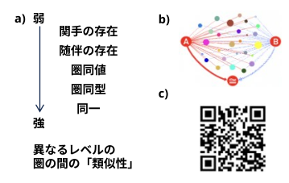
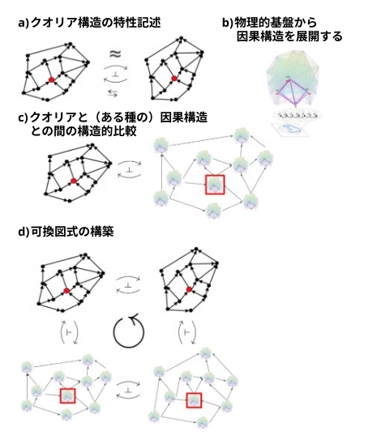
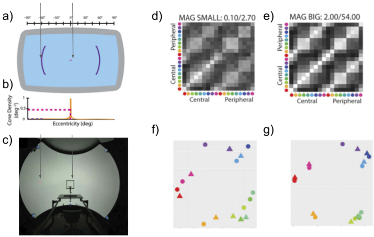
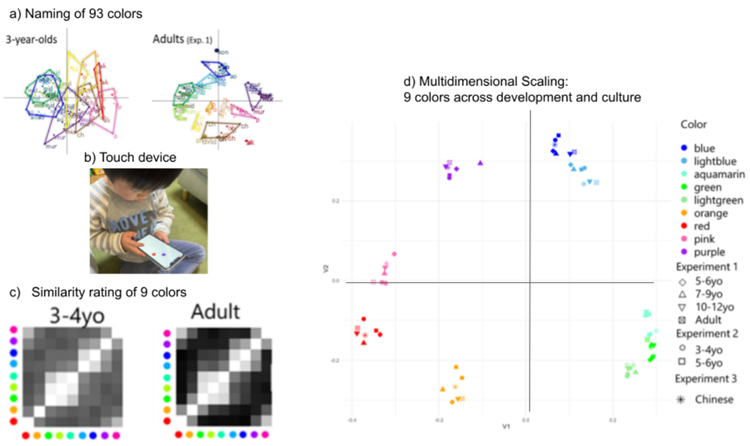
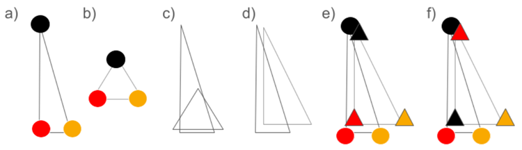
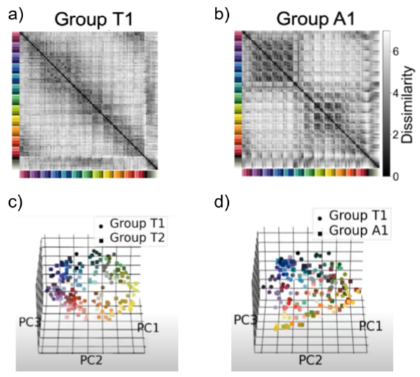
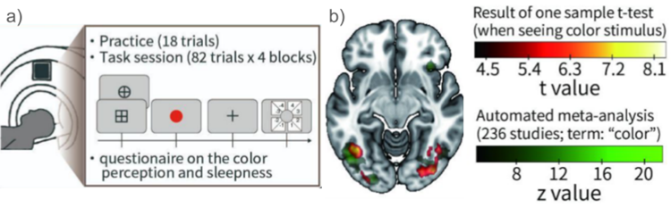
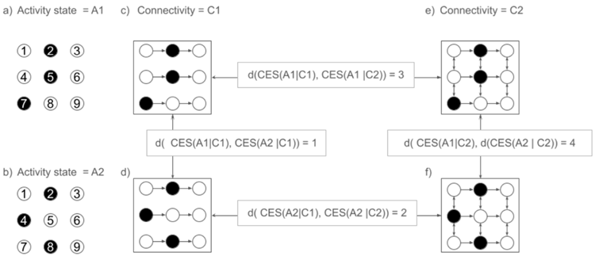
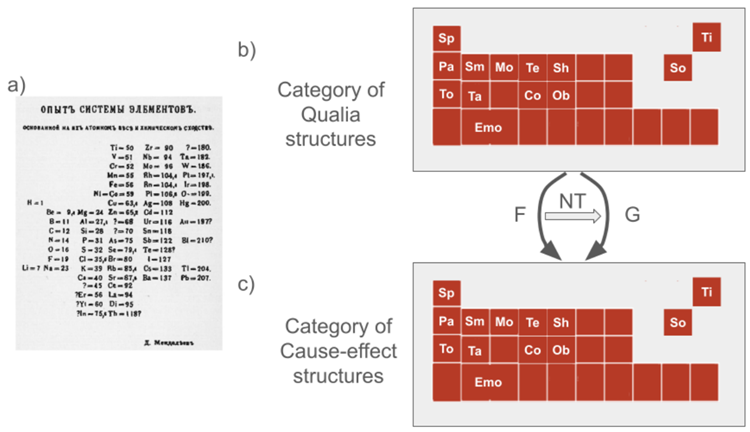

The nature of the relationships between qualitative aspects of consciousness, or qualia, and their
physical substrates remains unclear. The problem of qualia is one of the biggest challenges among
the enigmas of consciousness. One difficulty in qualia research is characterization of qualia. Verbal
descriptions and simple behavioral responses are unable to capture the richness of qualia, the
dilemma faced by the traditional NCC paradigm. Comparing a quale with another quale, however,
is not difficult. Such relational characterization of qualia, but now in a structural context, underlies
the core of the Qualia Structure paradigm. This new paradigm was inspired by category theory, in
particular, the Yoneda lemma, which states that an object in a category is characterized by its
relationships to all objects in that category. Inspired by the lemma, the Qualia Structure paradigm
proposes a pathway to characterize and organize the structural properties of different qualia type
one by one. As a result, it aspires to reach an organizing principle, akin to a Mendeleevian periodic
table, for the domains of qualia and their physical substrates. Under this framework, any valid
theories of consciousness should link the two domains in a structure-preserving manner. This level
of specification and understanding of relations between qualia and the physical would dissolve the
Hard Problem of consciousness in its current form.
意識の質的側面、すなわちクオリアと、その物理的基盤との関係の性質は、依然として不明確なままです。クオリアの問題は、意識をめぐる数々の謎の中でも最大の難問の一つです。クオリア研究における困難の一つは、クオリアをどのように特徴づけるかという点にあります。言語による記述や単純な行動反応だけではクオリアの豊かさを捉えることができず、これは従来のNCC（意識の神経相関）パラダイムが直面しているジレンマでもあります。しかし、あるクオリアと別のクオリアを比較することは、それほど困難ではありません。こうしたクオリア間の関係性に基づく特徴づけ――ただし、構造的な文脈において――こそが、「クオリア構造パラダイム」の中核をなす考え方です。この新しいパラダイムは、圏論、とりわけ「米田の補題」に着想を得ています。米田の補題とは、圏内の対象は、その圏内のすべての対象との関係性によって特徴づけられるというものです。この補題に触発され、クオリア構造パラダイムは、異なる種類のクオリアが持つ構造的特性を一つひとつ特徴づけ、体系化していくための道筋を提示します。その結果として、クオリアの領域と物理的基盤の領域に対し、メンデレーエフの周期表のような体系化の原理を導き出すことを目指しています。この枠組みの下では、意識に関するいかなる妥当な理論も、これら二つの領域を「構造を保存する」形で結びつけるものでなければなりません。クオリアと物理的側面との関係について、これほど詳細な特定と理解が可能になれば、意識の「ハード・プロブレム（難問）」は、現在のような形では解消されることになるでしょう。
Do subjective experiences and objective brain states belong to completely different worlds? How do qualia, qualitative aspects of consciousness, relate to the physical material of the brain? Qualia are the properties that characterize the moment of our conscious experience in terms of what it is like to have them (Chalmers, 2003; Nagel, 1974). There are various terminologies used to refer to the concept of qualia, such as phenomenal consciousness, contents of consciousness, feelings and others (Tye, 2021; Van Gulick, 2022).
主観的な体験と客観的な脳の状態は、全く異なる世界に属するものなのだろうか。意識の質的な側面であるクオリアは、脳という物理的・物質的なものとどのように関わっているのだろうか。クオリアとは、意識体験の瞬間を、「それを経験することがどのようなことか（what it is like）」という観点から特徴づける性質のことである（Chalmers, 2003; Nagel, 1974）。クオリアという概念を指す用語としては、現象的意識、意識の内容、感覚など、様々なものが用いられている（Tye, 2021; Van Gulick, 2022）。
One useful distinction to reduce confusions about qualia is its definition in a narrower or broader sense (Balduzzi & Tononi, 2009; Kanai & Tsuchiya, 2012). Qualia, in the broadest sense, refers to the entire experience of consciousness in a given moment. For example, when you are watching a sunset on the beach, the qualia includes not only the ocean and the sunset, but also the sound of the waves, the sensation of the sand, and your thoughts at that moment. In a narrower sense, it refers to an aspect of a momentary subjective experience, such as the "redness" of the sunset, the shape of the sun, and so on. In this chapter, we mainly discuss qualia in a narrower sense. However, it is important to note that a fuller understanding of qualia requires characterization of how narrower and broader qualia relate to each other (See Section 4.4 on this issue) (Lee-Youngzie et al., 2024).
クオリアをめぐる混乱を軽減する上で有用な区別の一つに、その定義を「狭義」と「広義」のどちらで捉えるかという点があります（Balduzzi & Tononi, 2009; Kanai & Tsuchiya, 2012）。最も広い意味でのクオリアは、ある特定の瞬間に生じる意識体験の全体を指します。例えば、浜辺で夕日を眺めているとき、そこに含まれるクオリアは、海や夕日だけでなく、波の音、砂の感触、そしてその瞬間に抱いている思考などをも含みます。一方、狭義のクオリアは、夕日の「赤さ」や太陽の形といった、瞬間的な主観的体験の一側面を指します。本章では、主に狭義のクオリアについて論じます。ただし、クオリアをより深く理解するためには、狭義のクオリアと広義のクオリアが互いにどのような関係にあるのかを明らかにすることが重要である点に留意する必要があります（この点についてはセクション4.4を参照）（Lee-Youngzie et al., 2024）。
Qualia have been considered as outside of the realm of science, as they appear to be intrinsic and private, only directly available and accessible to the experiencer. The ineffability, or impossibility of full description in words, seems to make qualia impossible to compare in an objective and intersubjective manner (Dennett, 1988)1
クオリアは、本質的かつ私的なものであり、その体験者にのみ直接的にアクセス可能であるように見えるため、科学の領域外にあるものとみなされてきた。言葉による完全な記述が不可能であるというその「言い表せなさ」ゆえに、クオリアを客観的かつ間主観的な方法で比較することは不可能であるように思われる（Dennett, 1988）1。
1 The Qualia Structure paradigm is naturally consistent with a philosophical view, grouped as “qualia realism”. Realists take qualia as some phenomena that exist. Qualia are the target of scientific explanation. While other philosophical views, such as illusionism (Frankish, 2016), are inconsistent with qualia realism, they may or may not be incompatible with the resulting data arising from the Qualia Structure paradigm. For discussions on the structural approaches and various philosophical options, see (Doerig et al., 2019; Fleming & Shea, 2024; Ellia & Tsuchiya, 2024; Tsuchiya et al., 2020). For a highly relevant philosophical position, called Ontic Structural Realism, see (Ladyman et al., 2007; Laudisa & Rovelli, 2021; Loorits, 2014).
「クオリア構造（Qualia Structure）」パラダイムは、「クオリア実在論」に分類される哲学的見解と自然に整合します。実在論者は、クオリアを実在する現象とみなします。クオリアは科学的説明の対象となります。イリュージョニズム（Frankish, 2016）のような他の哲学的見解はクオリア実在論とは相容れませんが、クオリア構造パラダイムから得られるデータと両立するかどうかは必ずしも明らかではありません。構造的アプローチや様々な哲学的選択肢に関する議論については、(Doerig et al., 2019; Fleming & Shea, 2024; Ellia & Tsuchiya, 2024; Tsuchiya et al., 2020) を参照してください。関連性の高い哲学的立場である「存在論的構造実在論（Ontic Structural Realism）」については、(Ladyman et al., 2007; Laudisa & Rovelli, 2021; Loorits, 2014) を参照してください。
Perhaps due to a prevailing pessimistic attitude, an earlier generation of consciousness researchers tended to focus on experimental paradigms where participants report on a single aspect of experience, where questions tend to be about its presence or absence. There, responses tended to be restricted in the form of binary yes or no, categorization, or rating along one dimension of visibility or confidence. While powerful and important, the results from this paradigm with simple responses are explainable by many theories of consciousness. Indeed, upon accumulated evidence in the neural correlates of consciousness over the last 30 years (Koch et al., 2016; Mashour et al., 2020), we have seen explosions of theories of consciousness (Del Pin et al., 2020; Doerig et al., 2021; Kleiner, 2024; Kuhn, 2024; Seth & Bayne, 2022), some of which at least explains this type of literature relatively well. If the main reason for accumulating empirical evidence was to provide tighter constraints on theories of consciousness, an explosion of theories has been rather ironic. The Qualia Structure paradigm proposes to accumulate evidence in a way to constrain the possibility space for theories of consciousness.
おそらく悲観的な見方が支配的であったためでしょう、初期の世代の意識研究者は、参加者が経験の単一の側面について報告するような実験パラダイムに焦点を当てる傾向がありました。そこでは、質問は主にその経験の有無を問うものであり、回答も「はい／いいえ」の二択、カテゴリー分類、あるいは視認性や確信度といった単一の次元に沿った評価といった形式に限定されがちでした。こうした単純な回答を伴うパラダイムから得られる結果は、強力かつ重要ではあるものの、意識に関する多くの理論によって説明可能です。実際、過去30年間にわたり意識の神経相関に関する証拠が蓄積される中で（Koch et al., 2016; Mashour et al., 2020）、意識理論の爆発的な増加が見られました（Del Pin et al., 2020; Doerig et al., 2021; Kleiner, 2024; Kuhn, 2024; Seth & Bayne, 2022）。その中には、少なくともこの種の研究知見を比較的うまく説明できる理論も存在します。もし実証的な証拠を蓄積する主な目的が意識理論に対してより厳密な制約を課すことにあったのだとすれば、理論の爆発的な増加はむしろ皮肉な結果と言えるでしょう。「クオリア構造（Qualia Structure）」パラダイムは、意識理論の可能性の空間を制約するような形で証拠を蓄積することを提案するものです。
How does it do it? While it is impossible to describe any quale exhaustively in words, a quale can be compared and related with other qualia easily and intuitively (Chalmers, 1996; Fink et al., 2021; Kleiner, 2024; Lee, 2021; Nagel, 1974; Tsuchiya & Saigo, 2021). This relational characterisation of qualia underlies the Qualia Structure paradigm.
それはどのようにして行われるのでしょうか。クオリアを言葉で網羅的に記述することは不可能ですが、あるクオリアを他のクオリアと比較し、それらと関連付けることは、容易かつ直感的に行えます（Chalmers, 1996; Fink et al., 2021; Kleiner, 2024; Lee, 2021; Nagel, 1974; Tsuchiya & Saigo, 2021）。クオリアに関するこうした関係性に基づく特徴づけが、「クオリア構造（Qualia Structure）」パラダイムの根底にあります。
Though relational methodology and concepts are immensely rich and deep topics, little has yet been applied to consciousness research. In this chapter, we take “similarity” as an example relation, yet there are many more relational characterizations. For example, “inclusion” has been used to study space qualia (A. Haun & Tononi, 2019) and topology in mathematics (Robinson, 2014; Rosiak, 2022). “Similarity” has a rich and long history in psychology (Roads & Love, 2024; Shepard & Cooper, 1992). Interestingly, however, even fundamental questions, such as whether similarity between qualia satisfies the axioms of distance (minimality, symmetry, and triangle inequality) is not yet resolved (Epping et al., 2023; Pothos et al., 2013; Rowe et al., 2024; Tversky,
1977).
関係論的な方法論や概念は極めて豊かで奥深いテーマですが、意識研究への適用はまだほとんどなされていません。本章では「類似性」を関係の一例として取り上げますが、関係による特徴づけは他にも数多く存在します。例えば、「包含」は空間クオリアの研究（A. Haun & Tononi, 2019）や数学におけるトポロジーの研究（Robinson, 2014; Rosiak, 2022）に用いられてきました。一方、「類似性」は心理学において豊かで長い研究の歴史を持っています（Roads & Love, 2024; Shepard & Cooper, 1992）。しかし興味深いことに、クオリア間の類似性が距離の公理（最小性、対称性、三角不等式）を満たすかどうかといった基本的な問いでさえ、いまだ解決されていません（Epping et al., 2023; Pothos et al., 2013; Rowe et al., 2024; Tversky, 1977）。
Relatedly, while various types of “spaces” for qualia have been proposed (Fekete & Edelman, 2011; Prentner, 2019; D. Rosenthal, 2015; Stanley, 1999), it is unclear if all qualia can be regarded as points in some high-dimensional space (Tsuchiya et al., 2024). At this stage, it may be better to step back a little, putting a wider net, rather than assuming the existence of some spaces for qualia, and to search for possible mathematical “structures” of qualia. This explains the origin of the name of our paradigm, the Qualia Structure.
関連して、クオリアのための様々な種類の「空間」が提案されてきましたが（Fekete & Edelman, 2011; Prentner, 2019; D. Rosenthal, 2015; Stanley, 1999）、すべてのクオリアを何らかの高次元空間における点として見なせるかどうかは不明です（Tsuchiya et al., 2024）。現段階では、クオリアのための特定の空間の存在を前提とするのではなく、むしろ一歩引いてより広い視野を持ち、クオリアが持ちうる数学的な「構造」を探求する方が賢明かもしれません。これこそが、我々のパラダイムである「クオリア構造（Qualia Structure）」という名称の由来です。
Category theory was invented as a formal way of transforming structures, introduced as “natural transformations” (Eilenberg & Mac Lane, 1945). To define natural transformations, functors were introduced. And to define functors, categories were introduced (Mac Lane, 1998). In other words, category theory was constructed to characterize the “sameness” between different “structures”, such as geometry and algebra, as some form of “transformation”. Transformation and similarity are related, but the latter is more to do with some kind of "distance" between two entities. We posit that similarity between two qualia structures can be dealt with in the same manner as sameness between two structures by the mathematical framework of category theory. For a formal introduction to category theory, we recommend (Awodey, 2010; Leinster, 2014; Riehl, 2017). For accessible introductions to category theory, we recommend (Cheng, 2022; Lawvere & Schanuel, 2009; Spivak, 2014).
圏論は、構造を変換する形式的な手法として、すなわち「自然変換」（Eilenberg & Mac Lane, 1945）として導入されました。自然変換を定義するために「関手」が導入され、関手を定義するために「圏」が導入されました（Mac Lane, 1998）。言い換えれば、圏論は、幾何学や代数学といった異なる「構造」の間の「同一性」を、ある種の「変換」として特徴づけるために構築されたのです。変換と類似性は関連していますが、後者は二つの実体の間にある種の「距離」があることに関わっています。我々は、二つのクオリア構造間の類似性もまた、圏論という数学的枠組みを用いることで、二つの構造間の同一性と同様に扱えるのではないかと考えます。圏論の本格的な入門書としては、(Awodey, 2010; Leinster, 2014; Riehl, 2017) を推奨します。また、より親しみやすい入門書としては、(Cheng, 2022; Lawvere & Schanuel, 2009; Spivak, 2014) を推奨します。
One of the most powerful tools in category theory is its toolkit to offer mathematically precise and different levels of “structural similarities” (Tsuchiya et al., 2016) (Figure 1a). Categories can have a functor (a structure-preserving map) or have a pair of adjoint functors, which relates two categories through a weak form of equivalence (Tsuchiya et al., 2023). Categories can be equivalent, isomorphic, or identical. The strength of the structural sameness differs substantially between them in a precise manner.
圏論における最も強力なツールの一つは、数学的に厳密かつ異なるレベルの「構造的類似性」（Tsuchiya et al., 2016）を提示する一連の枠組みです（図1a）。圏の間には、関手（構造を保存する写像）や随伴関手の対を定義することができ、これらは「弱い形の同値性」を通じて二つの圏を関連付けます（Tsuchiya et al., 2023）。圏同士の関係としては、同値、同型、あるいは同一といったものがあり得ますが、それらの間における構造的な「同一性」の強さは、厳密な形で大きく異なります。

Figure 1. Category theory as the mathematical foundation of the Qualia Structure paradigm. a) Different levels of sameness between categories (reproduced from (Tsuchiya et al., 2016)). b) The Yoneda lemma in a nutshell. To test if objects A and B in a category are the same or not, a web of relationships among all objects can be compared as an indirect characterization of the sameness. c) The QR code for an intuitive video description of the Yoneda lemma.(The Yoneda lemma: The Relational Approach)
図1. クオリア構造（Qualia Structure）パラダイムの数学的基盤としての圏論。a) 圏の間の「同一性」の異なるレベル（(Tsuchiya et al., 2016)より転載）。b) 米田の補題の概要。ある圏内の対象AとBが同一かどうかを調べる際、それらの同一性を間接的に特徴づけるものとして、すべての対象間の関係性のネットワークを比較することができる。c) 米田の補題を直感的に解説した動画へのQRコード。(The Yoneda lemma: The Relational Approach)
While consciousness science tends to assume or aspire to assume the “identity” (Oizumi et al., 2014) or to find “isomorphism” (Fink et al., 2021) between the subjective and the physical, the reality may turn out to be elsewhere and more nuanced. As an empirical research program, the Qualia Structure advocates quantifying the nature of structural similarity between the domain of qualia and the domain of physical substrates (Tsuchiya et al., 2016).
意識科学は、主観的な領域と物理的な領域との間の「同一性」（Oizumi et al., 2014）を前提とする（あるいは前提とすることを目指す）か、あるいは「同型性」（Fink et al., 2021）を見出そうとする傾向がありますが、実際には、事態はそれとは異なる、より複雑な様相を呈している可能性があります。実証的な研究プログラムとして、「クオリア構造（Qualia Structure）」は、クオリアの領域と物理的基質の領域との間にある構造的類似性の性質を定量化することを提唱しています（Tsuchiya et al., 2016）。
In addition to the different levels of sameness, category theory offers a mathematical foundation for the structural approach, the Yoneda lemma. “Lemma” is usually presented as a prelude to an important theorem. However, the lemma discovered by Nobuo Yoneda earlier than 1960 turned out to be one of the most powerful and insightful results from category theory (Bradley, 2017; Cheng, 2022; Tsuchiya & Saigo, 2021).
「同一性」の様々なレベルに加え、圏論は構造的アプローチのための数学的基盤、すなわち「米田の補題」を提供しています。「補題（lemma）」とは通常、重要な定理を導くための準備段階として提示されるものです。しかし、米田信夫が1960年より前に発見したこの補題は、結果として圏論における最も強力かつ洞察に富んだ成果の一つとなりました（Bradley, 2017; Cheng, 2022; Tsuchiya & Saigo, 2021）。
The most relevant consequence of the Yoneda lemma is that one can characterize an object in a category through its relationships with all other objects in the category. This statement makes sense intuitively when one considers how the meaning of a word is determined by its web of relationships with other words (c.f., Saussure’s structural linguistics (Gasparri & Marconi, 2015)). This type of indirect characterization has been employed in science when an object in question is difficult to define or characterize on its own. The benefits of the mathematical approach, such as the Yoneda lemma, is to provide precise conditions when such an inference is possible. Importantly, this inference is valid about an object in a category. Objects in a category have to satisfy a few axioms. For example, one of the axioms is “composition”. Suppose that “objects” {A, B, C} and “arrows” {f, g} form a category. Composition axiom requires that, if objects {A, B, C} are related to each other through two arrows f:A→B, g:B→C, then A and C must be related by the compositional relation g○f:A→C.
米田の補題がもたらす最も重要な帰結は、ある圏内の対象を、その圏内の他のすべての対象との関係性を通じて特徴づけられるという点にあります。この考え方は、ある単語の意味が他の単語との関係性の網の目の中で決定されるという点（ソシュールの構造言語学を参照：Gasparri & Marconi, 2015）を考えると、直感的に理解しやすいでしょう。このような間接的な特徴づけの手法は、対象そのものを単独で定義したり特徴づけたりすることが困難な場合、科学の分野でも用いられてきました。米田の補題のような数学的アプローチの利点は、そのような推論が可能となるための厳密な条件を提示できることにあります。重要なのは、この推論が「圏」における対象について有効であるという点です。圏内の対象は、いくつかの公理を満たす必要があります。例えば、「合成」もその公理の一つです。今、対象 {A, B, C} と射 {f, g} が圏を構成していると仮定しましょう。合成の公理によれば、対象 {A, B, C} が二つの射 f: A→B および g: B→C によって互いに関連づけられている場合、A と C は合成関係 g○f: A→C によって関連づけられていなければなりません。
An astute reader might be concerned here that “similarity” relation does not satisfy the requirement of category. Similarities between qualia can subjectively feel graded. Considering a case of gradual changes in experience, compositions appear to be violated. Consider the color qualia of the sky near sunset. Spot A may be similar to B in color, and spot B may be similar to C. Yet, A may not be similar at all to C.
鋭い読者なら、ここで「類似性」という関係が「カテゴリー」の要件を満たさないのではないかと懸念するかもしれない。クオリア間の類似性は、主観的に見て段階的なものとして感じられ得るからだ。経験が徐々に変化する事例を考えると、カテゴリーの構成性（合成性）が損なわれているように思われる。日没近くの空に見られる色のクオリアを例に挙げてみよう。ある地点 A の色は地点 B の色と似ているかもしれず、地点 B は地点 C と似ているかもしれない。しかし、地点 A は地点 C とは全く似ていないということもあり得るのである。
To address this type of concern, one can consider enriched category theory (Kelly, 1982; Lawvere, 1973), which extends the notion of “relation” into “generalized metric”2. For enriched categories, an enriched version of the Yoneda lemma can be applied. Thus, even if relationships among objects are neither binary nor categorical, we can apply the Yoneda lemma for the enriched categories in consciousness research (Tsuchiya et al., 2022). For a relatively technical discussion on the Consideration of mathematical properties of similarity about qualia , see also Appendix.
こうした懸念に対処する一つの方法として、「関係」という概念を「一般化された距離（generalized metric）」2へと拡張する「豊穣圏論（enriched category theory）」（Kelly, 1982; Lawvere, 1973）を検討することができます。豊穣圏に対しては、米田の補題の豊穣版を適用することが可能です。したがって、対象間の関係が二値的でも圏論的（通常の圏における射）でもない場合であっても、意識研究において豊穣圏に対する米田の補題を適用することができます（Tsuchiya et al., 2022）。クオリアの類似性に関する数学的性質の検討といった、比較的専門的な議論については、付録も参照してください。
2 Note that enriched category is not the only way to deal with this issue. See Chapter 8.2 in Eugenia Chen’s Joy of abstraction and “sorites paradox” in Stanford Encyclopedia
なお、この問題に対処する方法は「豊穣圏（enriched category）」だけではありません。Eugenia Cheng著『Joy of Abstraction』の第8.2章、およびスタンフォード哲学百科事典の「ソリテス・パラドックス（sorites paradox）」の項目を参照してください。
What do we mean by Qualia Structures? Broadly speaking, they are the underlying mathematical structures behind qualia. We hypothesize the existence of such structures, part of which can be characterized by behavioral similarity ratings between their different elements.
「クオリア構造」とは何を意味するのでしょうか。大まかに言えば、それはクオリアの背後にある数学的構造のことです。私たちはそのような構造の存在を仮定しており、その構造の一部は、異なる要素間の行動的類似性評価によって特徴づけることができます。
For example, in the narrow sense qualia of color, we can measure a set of similarity relationships among different color qualia. Consider a color qualia structure of a person X as a category (category QCX). Likewise, consider a qualia structure that describes the structural relationship among qualia for visual motion, emotion, space, and time,... for person X as category QMX, QEX, QSX, QTX,... etc. Grouping all of these, we can consider a category Q*X, whose objects are these categories and arrows describe structural relationships between these categories, for person X’s qualia.
例えば、狭義の「色のクオリア」について言えば、異なる色のクオリア間の類似関係の集合を測定することが可能です。ある人物Xの色のクオリア構造を一つの圏（圏QCX）とみなしてみましょう。同様に、人物Xにおける視覚的運動、情動、空間、時間などに関するクオリアの構造的関係を表すクオリア構造を、それぞれ圏QMX、QEX、QSX、QTX……などとみなします。これらすべてをまとめることで、人物Xのクオリアに関する圏Q*Xを考えることができます。この圏Q*Xにおいては、対象は上述の各圏であり、射はそれらの圏の間の構造的関係を表すものとなります。
For a particular qualia category, we can also construct a category of categories to describe interindividual differences. For example, consider a color qualia structure for neurotypical and atypical populations QCN and QCA. We can also consider the underlying developmental trajectory of color qualia as a function of age as QCi, where i is the age of a person. These concepts can be also extended to different species S for QCS3.
特定のクオリア・カテゴリーについて、個人差を記述するための「カテゴリーのカテゴリー」を構築することも可能です。例えば、定型発達集団および非定型発達集団における色のクオリア構造を、それぞれQCNおよびQCAとして考えてみましょう。また、年齢をiとしたとき、年齢の関数としての色のクオリアの根底にある発達的軌跡をQCiと捉えることもできます。これらの概念は、異なる種Sに拡張し、QCS3とすることも可能です。
3 In this formulation, it is perhaps too restrictive to assume all these different categories as an element in a set or a point in a space with proper metric. This is one of the reasons why we prefer a more general term, “structure”. Eventually, the concept of structures and space can be coherently subsumed at the level of another mathematical concept, called “topos”(Fong & Spivak, 2019; Goldblatt, 2014; Phillips, 2024). As of now, we promote the concept of “structures” over the more (currently) popular term of “space” as the latter seems to induce (unnecessary) theoretical restrictions and assumptions that may prevent us from revealing the nature of the underlying mathematical structures behind qualia. We hope that the usefulness of abstract formulation of the Quala Structure becomes clearer as you read on, especially Section 3.
この定式化において、これら多様なカテゴリーのすべてを、ある集合の要素や適切な距離を備えた空間上の点とみなすことは、おそらく制約が強すぎるでしょう。これこそが、私たちが「空間」よりも「構造（structure）」という、より一般的な用語を好む理由の一つです。最終的には、構造や空間という概念は、「トポス（topos）」と呼ばれる別の数学的概念の枠組みの中で、整合性を持って包括的に捉えることが可能です（Fong & Spivak, 2019; Goldblatt, 2014; Phillips, 2024）。現時点では、私たちは「空間」という（現在主流の）用語よりも「構造」という概念を推奨します。「空間」という用語は、（不必要な）理論的制約や仮定を招き寄せ、クオリアの背後にある数学的構造の本質を解明する妨げとなりかねないと考えられるからです。「クオリア構造」の抽象的な定式化が持つ有用性は、読み進めるにつれて、特に第3節において、より明確になっていくものと期待しています。
The Qualia Structure paradigm consists of the three distinct research approaches.
クオリア構造パラダイムは、3つの異なる研究アプローチから構成されています。
First, it tries to characterize qualia structures. This includes development of experimental methodologies and computational analysis techniques, such that we can estimate, visualize, and compare the relational structures of qualia from empirical data (Figure 2a). We will review recent advances along this line in Section 3.
まず、クオリアの構造を特徴づけることを試みます。これには、実験手法や計算解析技術の開発が含まれます。それらを用いることで、経験的データからクオリアの関係構造を推定、可視化、比較することが可能になります（図2a）。この方向性における近年の進展については、第3節で概観します。

Figure 2. Three pillars of the Qualia Structure paradigm and the final goal of establishing commutative diagrams to dissolve the Hard Problem of Consciousness. a) Characterizing and comparing qualia structures. Comparisons can be within-person across different times or space (Zeleznikow-Johnston et al., 2023) or across-persons (Kawakita et al., 2025; Moriguchi et al., 2025). b) Proposing and comparing different algorithms for extracting causal structures from physical substrates. The example is from Integrated Information Theory (Albantakis et al., 2023). c) Quantifying the degree of structural similarity between qualia structures and causal structures proposed by various theories. d) Establishment of commutative diagrams that is necessary to compare different individuals and species horizontally (within the domain) and between qualia and its underlying physical/causal basis vertically (across the domains). Such diagrams would dissolve the Hard Problem of Consciousness.
図2. 「クオリア構造」パラダイムを構成する3つの柱と、意識の「困難な問題（Hard Problem）」を解消するための可換図式構築という最終目標。a) クオリア構造の特性記述と比較。比較は、同一人物内での異なる時間や空間にわたるもの（Zeleznikow-Johnston et al., 2023）や、個人間でのもの（Kawakita et al., 2025; Moriguchi et al., 2025）であり得る。b) 物理的基盤から因果構造を抽出するための様々なアルゴリズムの提案とそれらの比較。例として統合情報理論（Albantakis et al., 2023）が挙げられる。c) クオリア構造と、様々な理論によって提案された因果構造との間の構造的類似性の度合いの定量化。d) 可換図式の構築。これは、異なる個人や種の間で水平的に（同一領域内で）、またクオリアとその基盤となる物理的・因果的根拠との間で垂直的に（領域をまたいで）比較を行うために必要となるものである。こうした図式は、意識の「困難な問題」を解消するであろう。
Second, it tries to propose and compare the candidate computational algorithms, which extracts the qualia-relevant structures from physical substrates. Among available theories of consciousness (Kuhn, 2024; Seth & Bayne, 2022), Integrated Information Theory (IIT) (Albantakis et al., 2023; Balduzzi & Tononi, 2009; A. Haun & Tononi, 2019; Oizumi et al., 2014; Tononi, 2004) has been most advanced in this front. In this book chapter, we call the hypothetical “qualia-relevant structures extracted from physical substrates” simply as “causal structures”. Note that the Qualia Structure paradigm is compatible with any other alternative theories, as long as they are specific enough to provide causal structures. Along this direction, candidate structures based on entropy and mutual information have been pitted against the integrated information structures (A. Haun et al., 2017) (See later for details).4
第二に、本書は、物理的基盤からクオリアに関連する構造を抽出するための計算アルゴリズムの候補を提示し、それらを比較しようとするものである。既存の意識理論（Kuhn, 2024; Seth & Bayne, 2022）の中で、この点において最も進んでいるのが統合情報理論（IIT）（Albantakis et al., 2023; Balduzzi & Tononi, 2009; A. Haun & Tononi, 2019; Oizumi et al., 2014; Tononi, 2004）である。本章では、この「物理的基盤から抽出されたクオリアに関連する構造」という仮説的な概念を、単に「因果構造」と呼ぶことにする。なお、「クオリア構造」パラダイムは、因果構造を提示できる程度に具体的であれば、他のいかなる代替理論とも両立可能であることに留意されたい。こうした方向性のもと、エントロピーや相互情報量に基づく構造の候補が、統合情報構造と比較検討されてきた（A. Haun et al., 2017）（詳細は後述）。4
4 A causal structure is an object in a category of causal structures (or CStr). A category of CStr consists of a collection of these objects with appropriate arrows. A candidate object is a cause-effect structure in IIT, which is hypothesized to correspond to a structure of a moment of a single experience (link to the IIT Wiki) or a broad quale. We can also consider different types of causal structures, CStr-sub, which consists of a subset of the IIT’s cause-effect structure, such that it reflects only one type of narrow qualia. For example, it is plausible that a subset of the cause-effect structures unfolded from the IIT’s complex may correspond to a color aspect of experience at the fovea. Call such a collection of causal structures as objects with appropriate arrows as a category, CStr-c. Similar categories can be constructed for other types of narrow qualia (e.g., visual motion, space, time). Now, a collection of (these smaller) CStr-* can also form a category of categories. For example, focusing on how CStr-c changes over time, we can consider CStr-c-dev. Or how CStr-c relates from one person to another, CStr-c-individual-differences. These two categories of categories are most directly comparable to the Qualia Structure discussed in Section 3.
因果構造（causal structure）とは、因果構造の圏（CStr）における対象のことです。CStrの圏は、これらの対象と適切な射（arrow）の集まりから構成されます。その対象の候補となるのがIIT（統合情報理論）における「因果効果構造（cause-effect structure）」であり、これは単一の経験の「ある瞬間」（IIT Wikiへのリンク）や、広義のクオリアの構造に対応すると仮定されています。また、IITの因果効果構造の部分集合からなり、特定の種類の「狭義のクオリア」のみを反映するような、異なるタイプの因果構造（CStr-sub）を考えることも可能です。例えば、IITの「複合体（complex）」から展開される因果効果構造の部分集合が、網膜中心窩（fovea）における経験の「色」の側面に対応しているという可能性は十分に考えられます。このような因果構造（対象）と適切な射からなる圏を、CStr-cと呼ぶことにしましょう。同様の圏は、他の種類の狭義のクオリア（例：視覚的な動き、空間、時間）についても構築可能です。さて、（これらより小さな）CStr-*の集まりは、さらに「圏の圏（category of categories）」を形成することもできます。例えば、CStr-cが時間とともにどのように変化するかに着目したCStr-c-devや、ある人と別の人との間でCStr-cがどのような関係にあるかを示すCStr-c-individual-differences（個人差）などを考えることができます。これら2つの「圏の圏」は、セクション3で論じた「クオリア構造（Qualia Structure）」と最も直接的に比較可能なものです。
Third, it tries to clarify the nature of the relationship between qualia structures and causal structures. The Qualia Structure paradigm does not start from the assumption that qualia structures are identical to some causal structure proposed by a particular theory. Rather, the Qualia Structure aims to characterize the degree of the structural similarity between qualia structures and causal structures, proposed by different theoretical proposals (Tsuchiya et al., 2016).
第三に、クオリア構造と因果構造との関係の性質を明らかにしようと試みている。「クオリア構造」というパラダイムは、クオリア構造がある特定の理論によって提示された因果構造と同一であるという前提から出発するわけではない。むしろ、クオリア構造（に関する研究）は、クオリア構造と、様々な理論的提案によって示される因果構造との間の構造的類似性の度合いを特徴づけることを目指している（Tsuchiya et al., 2016）。
As a result of these three approaches, the Qualia Structure paradigm eventually tries to establish commuting diagrams as in Figure 2d, which allows structural characterization of horizontal (within a domain) and vertical (across domains) directions. As elaborated later, this is a step necessary to achieve the dissolution of the Hard Problem.
これら3つのアプローチの結果として、「クオリア構造」パラダイムは最終的に、図2dに示すような可換図式を確立しようとします。これにより、水平方向（ドメイン内）および垂直方向（ドメイン間）の構造的特徴付けが可能になります。後述するように、これは「ハード・プロブレム」の解消を実現するために不可欠なステップです。
In the last section of this chapter, we briefly sketch a Qualia Periodic Table hypothesis, to provide further inspiration on where the Qualia Structure paradigm is trying to head towards. The hypothesis proposes a Mendeleevian approach to organize different types of qualia structures and causal structures as a possible extension of the horizontal elationship in Figure 2d. The hypothesis also proposes the two tables to be “dual” to each other. The dual relationship is a possible extension of the vertical relationship in Figure 2d. These mappings themselves are further organized in a tertiary structure, which specifies the relationships among different secondary structures as in natural transformation in category theory. Such tight hierarchical structures would leave little rooms for arbitrary thought experiments, and constrain logically possible worlds. When such a table is obtained, human knowledge may advance to the level that dissolves or reframes the original formulation of the hard problem of consciousness (Chalmers, 1996).
本章の最後の節では、「クオリア構造」パラダイムが目指す方向性についてさらなる示唆を得るために、「クオリア周期表」仮説の概要を提示します。この仮説は、図2dにおける「水平的関係」の拡張の可能性として、多種多様なクオリア構造や因果構造を体系化する、メンデレーエフ的なアプローチを提案するものです。また、この仮説では、二つの表が互いに「双対（デュアル）」な関係にあることも提唱しています。この双対関係は、図2dにおける「垂直的関係」の拡張にあたるものです。これらの写像自体もさらに高次の「三次構造」へと組織化され、圏論における自然変換のように、異なる二次構造間の関係を規定します。このように強固な階層構造が確立されれば、恣意的な思考実験の余地はほとんどなくなり、論理的に可能な世界も制約されることになるでしょう。そのような表が完成した暁には、人間の知は、意識の「ハード・プロブレム」（Chalmers, 1996）の当初の定式化を解消、あるいは再定義するような段階へと進歩するかもしれません。
Qualia structures can be inferred from introspection, to some extent. However, the history in psychological studies tells us that as the proper measurement and analysis methods are developed, we can reveal the structure with less distortion due to individual differences in memory, report capability and cognitive bias.
クオリアの構造は、ある程度までは内省によって推測可能です。しかし、心理学研究の歴史が示すように、適切な測定・分析手法が開発されるにつれ、記憶や報告能力、認知バイアスといった個人差に起因する歪みを抑えつつ、その構造を明らかにできるようになります。
With respect to color qualia structures, the nature of peripheral color has been disputed. One school of thought claims that color in the periphery is pure illusion, filled in by memory and expectation, facilitated by human ability to make saccades to the periphery (Carroll & Dennett, 2020.; Chater, 2018; Cohen et al., 2020; Cohen & Rubenstein, 2020; Giron et al., 2018)5. The core of this claim is the undeniable fact that the density of the cones in the retina decreases substantially towards the periphery (Curcio et al., 1990) (Figure 3a and b).
色のクオリアの構造に関して、周辺視野における色の性質については議論がなされてきた。ある説では、周辺視野の色は純粋な錯覚であり、記憶や期待によって「充填（fill-in）」されたものだと主張されている。このプロセスは、周辺視野に向けてサッカード（急速眼球運動）を行う人間の能力によって促進されるとされる（Carroll & Dennett, 2020; Chater, 2018; Cohen et al., 2020; Cohen & Rubenstein, 2020; Giron et al., 2018）5。この主張の核心にあるのは、網膜における錐体細胞の密度が周辺部に向かって著しく低下するという、否定しがたい事実である（Curcio et al., 1990）（図3aおよびb）。
5 Introduction in Zeleznikow-Johnston et al 2023 collects the following comments: “perceptual experience lacks a surprising amount of colour” (Cohen & Rubenstein, 2020), “introspection [about peripheral colour] cannot be truly reliable” (Giron et al., 2018), “our intuitive sense of a rich, colorful visual world is largely incorrect” (Cohen et al., 2020), and “... it seems that our color vision goes right way out to the edge of our vision. It doesn’t.” (Carroll & Dennett, 2020) as well as Discussion ‘subjective visual world’ is richly coloured...must be an illusion” (Chater, 2018).
Zeleznikow-Johnstonら（2023）の序論では、次のような見解が取り上げられている。「知覚体験には驚くほど色が欠けている」（Cohen & Rubenstein, 2020）、「（周辺視野の色に関する）内省は真に信頼できるものではない」（Giron et al., 2018）、「豊かで色彩に満ちた視覚世界という我々の直感的な感覚は、大部分において誤りである」（Cohen et al., 2020）、そして「……我々の色覚は視野の端にまで及んでいるように思えるが、実際にはそうではない」（Carroll & Dennett, 2020）。また、同論文の考察においても、「『主観的な視覚世界は色彩豊かである』……というのは錯覚に違いない」（Chater, 2018）と述べられている。

Figure 3. Within-subject color qualia structure comparisons between the fovea and the periphery a) Eccentricity of a widefield display (-90 to +90 degree visual angle (dva) across the horizontal direction). Two arrows indicate a possible position of a briefly (250 ms) presented color patch without mask. b) Estimated cone density as a function of eccentricity. c) The wide field display. One arrow points to a very small stimulus (0.1 or 2 dva) at fovea (1 dva from the fixation). The other arrow points to x27 magnified (2.7 or 54 dva) at the far periphery (60 dva from the fixation). Mean dissimilarity matrix (d, e) and its multidimensional scaling (f, g), demonstrating color qualia structures that are equivalent between the fovea and periphery. Modified from (Zeleznikow-Johnston et al., 2023).
図3. 網膜中心窩と周辺部における、同一被験者内での色クオリア構造の比較。a) 広視野ディスプレイの偏心度（水平方向に視角-90度から+90度）。2つの矢印は、マスクなしで短時間（250ミリ秒）提示されるカラーパッチの想定位置を示している。b) 偏心度の関数として示される推定錐体密度。c) 広視野ディスプレイ。一方の矢印は中心窩（固視点から視角1度）にある非常に小さな刺激（視角0.1度または2度）を指し、もう一方の矢印は遠方周辺部（固視点から視角60度）にある27倍に拡大された刺激（視角2.7度または54度）を指している。平均非類似度行列（d, e）およびその多次元尺度構成法（MDS）による解析結果（f, g）は、中心窩と周辺部で色クオリア構造が同等であることを示している。(Zeleznikow-Johnston et al., 2023)より改変。
The other school holds that color qualia in the periphery is actually perceived and experienced, not filled in from expectation, memory or eye movements. This stance is close to most people’s intuition, and it is also supported by the empirical vision science (Tyler, 2015) when cortical magnification factor is properly considered. Along with many other dimensions of visual properties (Anstis, 1998), too small stimuli at the periphery would be simply indistinguishable, but this is not limited to color qualia.
もう一方の学説は、視野周辺部における色のクオリアは、予測や記憶、あるいは眼球運動によって「埋め合わされた」ものではなく、実際に知覚・体験されていると主張しています。この見解は多くの人々の直感に近いものであり、皮質拡大率（cortical magnification factor）を適切に考慮すれば、実証的な視覚科学（Tyler, 2015）によっても裏付けられます。視覚特性の他の多くの側面（Anstis, 1998）と同様に、視野周辺部では刺激が小さすぎれば単に識別不可能となりますが、これは色のクオリアに限ったことではありません。
To empirically compare these claims, we performed a Registered Report study, where we fixed all experimental parameters before conducting an experiment to fairly compare the two theories. To be decisive, we briefly presented stimuli (250ms) at the far periphery (60 dva) using the widefield display (Figure 3c). Then we asked participants to rate the subjective similarity of two color patches (typically, from -4 being very dissimilar to +4 being very similar. See the demonstration of the task used in (Moriguchi et al., 2025) here https://osf.io/scbu2?view_only=07279177f6344c1f9c5a1e2b3c10640a). Figure 3d-g summarize the results, clearly in support of equivalent color qualia structures between the fovea and periphery (Zeleznikow-Johnston et al., 2023). This is consistent with previous studies, which used appropriately magnified colored stimuli at the periphery (Abramov et al., 1991; Hansen et al., 2009), as well as a formal modeling study (A. M. Haun, 2021).
これらの主張を実証的に比較するため、我々は「登録済みレポート（Registered Report）」形式の研究を実施しました。この研究では、2つの理論を公平に比較できるよう、実験実施前にすべての実験パラメータを固定しました。決定的な結果を得るために、広視野ディスプレイを用いて、極めて周辺の視野領域（中心から60度：60 dva）に刺激を短時間（250ミリ秒）提示しました（図3c）。その後、参加者に2つの色パッチの主観的な類似性を評価してもらいました（通常、-4を「非常に異なる」、+4を「非常に似ている」とする尺度を使用。Moriguchi et al. (2025) で用いられた課題のデモンストレーションは、こちら https://osf.io/scbu2?view_only=07279177f6344c1f9c5a1e2b3c10640a を参照）。図3d-gに結果をまとめましたが、これらは中心窩と周辺視野の間で色のクオリア構造が同等であることを明確に支持するものでした（Zeleznikow-Johnston et al., 2023）。この結果は、周辺視野において適切に拡大された色刺激を用いた先行研究（Abramov et al., 1991; Hansen et al., 2009）や、数理モデルを用いた研究（A. M. Haun, 2021）の結果と整合しています。
Theoretically speaking, structural comparisons of qualia (not necessarily color) at the fovea and periphery are a great testing ground that can be utilized further. A given person can directly compare and report similarities of qualia at these locations. Thus, the investigated set of color qualia and its similarity relations across the entire visual field can form an enriched category, where the Yoneda lemma applies (See section 2.2). When similarity is obtained from different individuals, this Yoneda inference is not valid on its own. However, we can still learn many structural facts from intersubjective characterization of qualia structure, as we see next.
理論的に言えば、網膜中心窩と周辺部におけるクオリア（必ずしも色に限らない）の構造的比較は、今後さらに活用しうる優れた検証の場となります。ある個人は、これら異なる部位におけるクオリアの類似性を直接比較し、報告することが可能です。したがって、視野全体にわたる色クオリアの集合とその類似関係は、米田の補題が適用可能な、豊かな構造を持つ圏を形成し得ます（セクション2.2を参照）。異なる個人の間で類似性が得られる場合、この米田の補題に基づく推論はそれ単独では成立しません。しかし、次に述べるように、クオリア構造を主体間で共有可能な形で特徴づけることによって、依然として多くの構造的事実を明らかにすることができます。
In one line of the research, we have been examining how qualia structures can change across development over the childhood. During childhood, cognitive capabilities such as language, categorization and memory improves massively. Can the changes in the cognitive capabilities alter the structures of qualia?
私たちが行っている研究の一環として、小児期の発達に伴いクオリアの構造がどのように変化し得るかについて検討してきました。小児期には、言語、カテゴリー化、記憶といった認知能力が飛躍的に向上します。こうした認知能力の変化は、クオリアの構造を変容させ得るのでしょうか。
Previous color studies (Forbes & Plunkett, 2023; Pitchford & Mullen, 2003; Saji et al., 2020) have established that color categorization in infants and children are distinct from that of adults. For example, the similarity of naming responses for a given color patch to another patch can be defined as intersubjective naming consistency between the two colors. With such a measure, (Saji et al., 2020) demonstrated that 3-year-old children very often confuse color names, for example, blue and green (Figure 4a). Does a confused and indiscrete color structure obtained from naming experiments reflect children’s color qualia structure?
これまでの色彩に関する研究（Forbes & Plunkett, 2023; Pitchford & Mullen, 2003; Saji et al., 2020）により、乳幼児や児童における色のカテゴリー化は、大人とは異なるものであることが明らかになっています。例えば、ある色パッチに対する呼称反応と別のパッチに対する呼称反応との類似性は、その2色間における呼称の一致度（intersubjective naming consistency）として定義できます。Sajiら（2020）は、こうした指標を用いて、3歳児が「青」と「緑」といった色の名称を頻繁に混同していることを示しました（図4a）。呼称実験によって得られた、混同が見られ境界が不明瞭な色の構造は、子供が抱く色のクオリア（感覚的質感）の構造を反映しているのでしょうか。

Figure 4. Development of color qualia structures a) Color naming results, represented by 2-dimensional multidimensional scaling (MDS), based on the similarity matrix inferred from confusion error in color naming (Saji et al., 2020). b) Touch panel devices are intuitive to children, minimizing errors associated with reports (e.g., mouse click, verbal responses). c) Color similarity matrix, directly obtained from participants in (Moriguchi et al., 2025). d) MDS across age groups from 3-years to adults, Japanese and Chinese, with nearly the same structures.
図4. 色クオリア構造の発達 a) 色の命名における混同（誤答）から推定された類似性行列に基づき、2次元の多次元尺度構成法（MDS）で表現した色命名の結果（Saji et al., 2020）。 b) タッチパネルデバイスは子供にとって直感的であり、報告に伴う誤差（マウスのクリックや口頭での回答など）を最小限に抑えることができる。 c) (Moriguchi et al., 2025) において参加者から直接得られた色の類似性行列。 d) 3歳児から大人まで、および日本人と中国人を対象としたMDSの結果。いずれもほぼ同様の構造を示している。
To test this, we developed a similarity rating task for young children. With intuitive touch devices (Figure 4b) and instructions, we obtained nearly equivalent color similarity structures across development from 3- through 12-year-old to adult (Figure 4c, d). To understand more fine grained equivalence and development of color qualia structures, we need a larger scale experiment with more color gradations, such as the one we explain next.
これを検証するため、私たちは幼児を対象とした類似性評価課題を開発しました。直感的に操作できるタッチデバイス（図4b）と適切な教示を用いることで、3歳児から12歳児、そして大人に至るまで、発達段階にかかわらずほぼ同等の色類似性構造が得られました（図4c、d）。色のクオリア構造におけるより詳細な同等性や発達の様子を理解するには、次に説明するような、より多くの色階調を用いた大規模な実験が必要となります。
One of the reasons why similarity experiments have not been widespread in consciousness research may be related to expected cost of experiments due to a large amount of data required. As we show next, this issue has been alleviated thanks to the development of online experimental platforms, where it is fast and easy to recruit a large number of participants. Although online experiments were not rapidly adopted initially due to skepticism in response accuracy, recent experiments have provided high reliability and validity in perceptual experiments (Bridges et al., 2020; Chuyin et al., 2022; Crump et al., 2013; Hebart et al., 2020; Li et al., 2020; Qianchen et al., 2022; Sheehan, 2018).
意識研究において類似性実験があまり普及してこなかった理由の一つとして、膨大なデータを必要とすることに伴う実験コストへの懸念が挙げられるかもしれません。しかし、次に述べるように、この問題はオンライン実験プラットフォームの発展によって緩和されてきました。こうしたプラットフォームを利用すれば、多数の参加者を迅速かつ容易に募集できるからです。当初、オンライン実験は回答の正確性に対する懐疑的な見方からすぐには普及しませんでしたが、近年の研究では、知覚実験において高い信頼性と妥当性が示されています（Bridges et al., 2020; Chuyin et al., 2022; Crump et al., 2013; Hebart et al., 2020; Li et al., 2020; Qianchen et al., 2022; Sheehan, 2018）。
Consider the set of 93 colors used in color-naming experiments (Saji et al., 2020). With a naming task, a participant can name the color of a given patch for all colors just in 93 trials. If one were to consider a similarity rating experiment using the same set, there are 8649 combinations, distinguishing the order of presentation and including the trials with the same color pairs. There are ways to economically estimate the similarity “judgments”, such as the “inverse MDS” method by (Kriegeskorte & Mur, 2012). However, for the estimation of qualia structures, similarity “experience” matters. To equate experience, it is critical to control the duration of stimulus presentation and location of eye fixation. To achieve a tighter control on these parameters, it is straightforward to rate subjective similarity between a pair of synchronously (or asynchronously, with minimal delay) presented stimuli.
色命名実験（Saji et al., 2020）で用いられた93色のセットを考えてみましょう。命名課題であれば、参加者はわずか93試行で、提示された各色のパッチに名前を付けることができます。一方、同じセットを用いて類似性評価実験を行う場合、提示順序を区別し、同一色のペアによる試行も含めると、その組み合わせは8649通りにのぼります。Kriegeskorte & Mur (2012) による「逆MDS（inverse MDS）」法のように、類似性「判断」を効率的に推定する手法も存在します。しかし、クオリア構造を推定する上では、類似性の「経験」が重要となります。経験を一定に保つためには、刺激の提示時間や注視位置を制御することが不可欠です。これらのパラメータをより厳密に制御する上では、同期して（あるいは最小限の遅延を伴う非同期で）提示された刺激ペア間の主観的類似性を評価するのが、簡便かつ有効な方法です。
While we can collect 8649 trials from a particular individual in the lab, it is much more efficient to distribute stimulus combinations across many participants and average them, to obtain a rough idea of underlying qualia structures that are shared across the target populations. Such large-scale online experiments can be followed up with complementary in-lab testing with fewer participants to overcome environmental limitations (e.g., size of the visual field) (Zeleznikow-Johnston et al., 2023).
特定の個人から実験室で8,649試行分のデータを収集することは可能ですが、対象集団全体で共有されるクオリアの構造の概略を把握するには、多数の参加者に刺激の組み合わせを分散して提示し、それらを平均化する方がはるかに効率的です。こうした大規模なオンライン実験の後に、少数の参加者を対象とした補完的な実験室実験を行うことで、（視野の大きさといった）環境上の制約を克服することができます（Zeleznikow-Johnston et al., 2023）。
We have conducted online experiments, collecting the similarity responses from >400 color typical and >250 color atypical populations (Kawakita et al., 2024, 2025). While each individual rated similarities of 80-160 color combinations, aggregated responses converge relatively quickly as assessed by the method for unsupervised alignment (See below).
我々はオンライン実験を実施し、典型的な色覚を持つ400名以上および非典型的な色覚を持つ250名以上の集団から、色の類似性に関する回答を収集しました（Kawakita et al., 2024, 2025）。各参加者は80〜160通りの色の組み合わせについて類似性を評価しましたが、教師なしアライメント手法（後述）を用いて評価したところ、集約された回答は比較的早期に収束することが確認されました。
Similar strategies can be applied to other dimensions of qualia. Our ongoing experiments include similarity ratings among piano sounds, visual motion, emotional movies (Lin et al., 2023), words, sentences and so on. There have been various influential similarity rating experiments (Shepard, 1982; Shepard & Cooper, 1992), which informed subsequent structural theories of consciousness. We believe it is worthwhile to revisit the literature and try to replicate them in large-scale online experiments, perhaps recording the individual differences. With such approaches, there are many questions that can be addressed as we saw in the developmental study (Moriguchi et al., 2025). Are qualia structures innate from birth? How malleable are they due to development, learning, language, culture and psychological states? Are different types of qualia structures affected by these factors differently? How much are qualia structures intersubjectivity shared?
同様の手法は、クオリアの他の側面にも適用可能です。現在進行中の実験には、ピアノの音、視覚的な動き、感情を喚起する動画（Lin et al., 2023）、単語、文章などの間での類似性評価が含まれます。これまでに、意識の構造に関するその後の理論に大きな影響を与えた、数々の重要な類似性評価実験が行われてきました（Shepard, 1982; Shepard & Cooper, 1992）。私たちは、こうした先行研究を再検討し、大規模なオンライン実験によって（場合によっては個人差を記録しつつ）それらを追試することには価値があると考えています。こうしたアプローチをとることで、発達に関する研究（Moriguchi et al., 2025）で見られたように、多くの問いに取り組むことが可能になります。クオリアの構造は生まれつき備わっているものなのでしょうか？ 発達、学習、言語、文化、心理状態によって、それらはどの程度変化しうるのでしょうか？ 異なる種類のクオリア構造は、これらの要因からそれぞれ異なる影響を受けるのでしょうか？ そして、クオリアの構造は、どの程度まで主体間で共有されているのでしょうか？
With the Qualia Structure paradigm, we can address a fundamental question of “is my red similar to your red?” from a structural perspective (Kawakita et al., 2025).
クオリア構造パラダイムを用いることで、「私の『赤』はあなたの『赤』と似ているのか？」という根本的な問いに、構造的な観点から取り組むことができます（Kawakita et al., 2025）。
Unlike the within-subject comparisons of similarity structures in the last section, however, across-subjects comparisons of similarity structures are not as straightforward to interpret. While the Yoneda lemma applies to an (enriched) category, a category needs to have a relationship between objects, such as color qualia within a single person. At this stage, it is not clear whether we can form a category in an across-subject manner. Thus, we cannot apply the Yoneda lemma directly.
しかし、前節で扱った同一の被験者内における類似性構造の比較とは異なり、被験者間での類似性構造の比較は、その解釈がそれほど単純ではありません。米田の補題は（豊饒）圏に適用されるものですが、圏を成すためには、単一の人物における色のクオリアのような、対象間の関係性が存在する必要があります。現段階では、被験者間をまたぐ形で圏を構成できるかどうかは明らかではありません。したがって、米田の補題を直接適用することはできません。
As an alternate pathway, recently we have proposed the unsupervised alignment as a way to find the violation of the necessary condition for two people to have the same qualia (Kawakita et al., 2025). That is, the structural equivalence between the two persons is one of the necessary conditions for two people to have the same qualia. Let us walk through the examples in Figure 5 to make this point.
代替的なアプローチとして、我々は最近、二人の人間が同一のクオリアを持つための必要条件が満たされていないこと（違反）を見出す手法として、「教師なしアライメント（unsupervised alignment）」を提案しました（Kawakita et al., 2025）。すなわち、二人の人間が同一のクオリアを持つためには、両者の間に「構造的同等性」が成立していることが必要条件の一つとなります。この点について、図5の例を用いて説明しましょう。

Figure 5. Schematic representation of structural differences and structural equivalence with item difference. a) Experienced dissimilarity relations are represented as the length of lines. For this hypothetical person, black feels very different from red and orange. b) For another hypothetical person, all three colors feel similar to the same degree. c) Structural difference. The structures cannot be “aligned”. d) Structural equivalence. The structures can be aligned, without knowing the labels. e) The item-level labels match between the aligned structures. f) While two structures match, the item-level labels do not match. This may be a case of inverted qualia between the two persons.
図5. 構造的差異および項目差を伴う構造的等価性の模式図。a) 経験される非類似性の関係が、線の長さとして表現されている。この仮想的な人物にとって、黒は赤やオレンジとは大きく異なって感じられる。b) 別の仮想的な人物にとっては、これら3つの色はすべて同程度に似ていると感じられる。c) 構造的差異。構造を「対応させる（アラインする）」ことはできない。d) 構造的等価性。ラベルを知らなくても、構造を対応させることができる。e) 対応させた構造間で、項目レベルのラベルが一致している。f) 2つの構造は一致しているが、項目レベルのラベルは一致していない。これは、2人の間におけるクオリアの反転（inverted qualia）の事例である可能性がある。
Figure 5a depicts a hypothetical person’s color qualia structure. This is similar to most people’s color qualia structure, where black appears very different from red and orange. Figure 5b is another person’s color qualia structure where all three colors are similar in the same way. The three dissimilarities are the same. Figure 5c shows that these two structures (or shape in the dissimilarity space) cannot be matched with any combination of rotation, reflection, scaling and translation (called the Affine transformation). Figure 5d is a case where with some degrees of inaccuracy (thus we talk about “equivalence”, see Figure 1a), we can match the two shapes. Figure 5e is a case where “after” matching the shape without knowing the item-level labels (thus, it is called “unsupervised alignment”), all three labels turned out to match with each other. Figure 5f is an intriguing possibility, where the structures are equivalent between the two, but the labels are swapped. Figure 5f, if empirically found, is a possible candidate case of “inverted qualia” in reality (Palmer, 1999)6.
図5aは、ある仮想的な人物の色のクオリア構造を示しています。これは多くの人の色のクオリア構造と同様であり、そこでは黒が赤やオレンジとは大きく異なって知覚されます。図5bは別の人物の色のクオリア構造であり、ここでは3つの色が互いに同様の関係にあります（つまり、3つの色の間の非類似度の関係が同じになっています）。図5cは、これら2つの構造（あるいは非類似度空間における形状）が、回転、鏡映、拡大縮小、平行移動（これらはアフィン変換と呼ばれます）のいかなる組み合わせによっても一致させられないことを示しています。図5dは、ある程度の不正確さを許容すれば（したがってここでは「等価性」について論じます。図1aを参照）、2つの形状を一致させることができるケースです。図5eは、個々の要素のラベルを知らずに形状を一致させた（したがって、これは「教師なしアライメント」と呼ばれます）結果、3つのラベルすべてが互いに一致したケースです。図5fは興味深い可能性を示しており、2者の間で構造は等価であるものの、ラベルが入れ替わっているという状況です。もし図5fのようなケースが実際に確認されれば、それは現実における「クオリアの反転（inverted qualia）」の候補となり得る事例です（Palmer, 1999）6。
6 Inverted color qualia structure might be proven theoretically (im)possible, for example, due to the (non-)permutability of the underlying structure. This is highly speculative, but it is a potential project for the future. In mathematics, Galois theory provides a very elegant answer to the question of the existence of a formula for the roots of a 5-th (or higher) degree polynomial equation in terms of the coefficients of the polynomial with some restrictions (Leinster, 2024b). One of the key insights of the Galois theory is the equivalence between the solvability of equations and presence of a certain structure of the permutation group of its roots. It may be a far-fetched conjecture, but it is plausible that a similar approach may be applied to qualia structure. For example, a possibility of qualia inversion may turn out to be equivalent to the presence of certain structural characteristics of the underlying mathematical structure of qualia.
クオリアの構造における「色の反転」の可能性については、例えばその基盤となる構造の置換可能性（あるいは不可能性）といった観点から、理論的にその可否が証明されるかもしれません。これは極めて推測的な話ではありますが、将来的に取り組むべき課題となり得るものです。数学の分野では、ガロア理論が、5次（あるいはそれ以上）の多項式方程式の解を係数を用いて表す公式の存在について、非常にエレガントな答えを提示しています（Leinster, 2024b）。ガロア理論の重要な洞察の一つは、方程式が解けるかどうかということと、その解の置換群が特定の構造を持っているかどうかということが等価である、という点にあります。飛躍した推測に聞こえるかもしれませんが、クオリアの構造に対しても同様のアプローチが適用できる可能性は十分に考えられます。例えば、クオリアの反転が可能かどうかという問題は、クオリアの基盤となる数学的構造が特定の構造的特徴を備えているかどうか、という点と等価であることが明らかになるかもしれません。
With this notion at hand, we applied one of the unsupervised alignment methods, called the Gromov Wasserstein Optimal Transport (GWOT) method (Alvarez-Melis & Jaakkola, 2018; Mémoli, 2011; Sasaki et al., 2023), to test the alignment of color qualia structures, between >400 color typical and >250 atypical participants. Color atypical participants were screened with online-version of the Ishihara test.
この考えに基づき、我々は教師なしアライメント手法の一つであるGromov-Wasserstein Optimal Transport（GWOT）法（Alvarez-Melis & Jaakkola, 2018; Mémoli, 2011; Sasaki et al., 2023）を適用し、色覚が典型的な400名以上の参加者と非典型的な250名以上の参加者の間における、色クオリア構造のアライメントを検証しました。なお、色覚が非典型的な参加者は、オンライン版の石原表を用いて選別されました。
A dissimilarity matrix obtained from color typical participants is actually highly correlated with that from color atypical participants (Pearson correlation coefficient of ρ~0.66 for the data subsampled from 128 participants each, Figure 6a and b). However, correlations do not imply structural equivalence. In fact, correlation coefficients and unsupervised alignment performance are dissociable (Kawakita et al., 2024, 2025; Sasaki et al., 2023).
「色覚が典型的な参加者」から得られた非類似度行列は、「色覚が非典型的な参加者」から得られたものと高い相関を示します（各128名の参加者からサブサンプリングしたデータにおいて、ピアソン相関係数 ρ ≈ 0.66；図6aおよびb）。しかし、相関関係があるからといって、構造的な等価性が示されるわけではありません。実際、相関係数と教師なしアライメントの性能は、互いに独立した（解離し得る）ものです（Kawakita et al., 2024, 2025; Sasaki et al., 2023）。

Figure 6 Unsupervised alignment a and b) Dissimilarity matrices for 93 color patches for a) color typical participants (estimated from N=128 subset of participants) and b) color atypical participants (N=128). c and d) Results of the unsupervised alignment. c) Two separate cohorts of color typical participants (T1 and T2; for 3D rendering with rotation, see https://drive.google.com/file/d/1UnZZYsrq7P-fEqK3bWLuC2BMaCYtno-/view). d) Color typical (T1) and color atypical (A1) participants (https://drive.google.com/file/d/1UarebXVMK2oh0NUMcVE3YhTUkJd9BZub/view). Greenish and reddish points are separated for T1 but not for A1, as expected from the online-Ishihara test. Modified from (Kawakita et al., 2025).
図6 教師なしアライメント。aおよびb）93個のカラーパッチに関する非類似度行列。a）典型的な色覚を持つ参加者（参加者全体のサブセットであるN=128から推定）、b）非典型的な色覚を持つ参加者（N=128）。cおよびd）教師なしアライメントの結果。c）典型的な色覚を持つ参加者の2つの独立したコホート（T1およびT2；回転を伴う3Dレンダリングについては https://drive.google.com/file/d/1UnZZYsrq7P-fEqK3bWLuC2BMaCYtno-/view を参照）。d）典型的な色覚を持つ参加者（T1）と非典型的な色覚を持つ参加者（A1）（https://drive.google.com/file/d/1UarebXVMK2oh0NUMcVE3YhTUkJd9BZub/view）。オンライン石原式色覚検査から予想される通り、T1では緑系と赤系の点が分離しているが、A1では分離していない。(Kawakita et al., 2025)より改変。
Unsupervised alignment techniques are powerful tools to perform structural analysis of the data. Here we depicted its application to qualia structures, but it can be also applied to neural data (Thual et al., 2022). Further, this type of unsupervised alignment techniques might be applied to the comparisons of structures across the domains (e.g., qualia and causal structures at the level of category of categories), which is one of the most exciting projects in the future.
教師なしアライメント手法は、データの構造解析を行うための強力なツールです。ここではクオリア構造への適用例を示しましたが、本手法は神経データにも適用可能です（Thual et al., 2022）。さらに、こうした教師なしアライメント手法は、異なるドメイン間（例えば、「圏の圏」のレベルにおけるクオリア構造と因果構造など）の構造比較にも応用できる可能性があり、これは将来的に最も興味深い取り組みの一つと言えます。
Computational analysis techniques, such as alignments, enable us to analyze the similarity data in a concrete way, while category theory provides an abstract and mathematical basis. Crosstalks between computational analyses and category theory are likely to bring us further useful techniques, even beyond the scope of the Qualia Structure paradigm (Leinster, 2024a; Willerton, 2021).
アライメントなどの計算解析手法は、類似性データを具体的に分析することを可能にする一方で、圏論は抽象的かつ数学的な基盤を提供します。計算解析と圏論の相互作用は、「クオリア構造（Qualia Structure）」のパラダイムの枠組みを超えて、さらなる有用な手法をもたらす可能性があります（Leinster, 2024a; Willerton, 2021）。
In this regard, further computational and mathematical analysis of the nature of the “failure” of unsupervised alignment would be very interesting. What does it mean exactly when color qualia structures from typical participants do not align with those from atypical participants? At the abstract mathematical level, does it correspond to a different level of sameness proposed in Figure 1a? If so, can we formalize it using category theory? At the computational level, can we invent an algorithm to quantify such different levels of sameness?
この点に関して、教師なしアライメントにおける「失敗」の性質について、さらなる計算論的・数学的な分析を行うことは非常に興味深いでしょう。典型的な参加者の色クオリア構造と非典型的な参加者の色クオリア構造が整合しないということは、正確には何を意味するのでしょうか。抽象的な数学的レベルにおいて、それは図1aで提示された「同一性」の異なるレベルに対応するのでしょうか。もしそうであれば、圏論を用いてそれを定式化できるでしょうか。また、計算論的レベルにおいて、そのような同一性の異なるレベルを定量化するアルゴリズムを考案できるでしょうか。
Computational alignment analysis can be applied to analyze behavioral outputs from any systems, ranging from a simple computational model to a complex large language model, such as GPT (Binz & Schulz, 2023; Bubeck et al., 2023). Indeed, GPT demonstrates human-level (or better) performance on highly complex cognitive psychological questions, whose accuracy is likely to improve over the years.
計算アライメント分析は、単純な計算モデルからGPTのような複雑な大規模言語モデルに至るまで、あらゆるシステムから得られる行動出力を分析するために適用可能です（Binz & Schulz, 2023; Bubeck et al., 2023）。実際、GPTは極めて複雑な認知心理学的な課題において人間と同等（あるいはそれ以上）の性能を示しており、その精度は今後さらに向上していくと考えられます。
GPT can also generate similarity ratings between pairs of perceptual stimuli (Marjieh et al., 2023). In (Kawakita et al., 2024), we reported that outputs from GPT4 can be aligned with human color-typical similarity data at a 91.4% matching rate, substantially better than GPT3.5 (11.8%). The difference between GPT4 and GPT3.5 might be due to the massive difference in their architecture and the data used for learning (e.g., multimodal training for GPT4). In contrast, popular perceptual models of color, such as RGB or LAB, do not produce similarity matrices that can be aligned well with the human similarity matrix. Alignment performances were quite low, with matching rates for RGB and LAB being 5.38% and 4.30%, respectively.
GPTは、知覚刺激のペア間における類似度を生成することも可能です（Marjieh et al., 2023）。Kawakitaら（2024）は、GPT-4の出力が、色に関する人間の典型的な類似度データと91.4%の割合で整合すること、すなわちGPT-3.5（11.8%）よりも大幅に高い整合性を示すことを報告しました。GPT-4とGPT-3.5の間のこの違いは、両者のアーキテクチャや学習に使用されたデータ（例：GPT-4におけるマルチモーダル学習）の大きな差異に起因している可能性があります。対照的に、RGBやLABといった一般的な色の知覚モデルでは、人間の類似度行列と十分に整合するような類似度行列を生成することはできません。その整合性能は極めて低く、RGBとLABの整合率はそれぞれ5.38%および4.30%にとどまりました。
The difference in the alignment accuracy (from >90% to <5%) contrasts uniformly high Spearman correlation (ρ~0.6-0.77) among all model outputs, compared to the similarity ratings from color typical humans, dissociating the outcomes of alignment of structures from simpler statistical correlation.
アライメント精度の差（90%超から5%未満へ）は、色覚が標準的な人間による類似度評価と比較した際の、すべてのモデル出力間における一貫して高いスピアマン相関（ρ≈0.6～0.77）とは対照的であり、このことは、構造のアライメント結果が単純な統計的相関とは別個のものであることを示しています。
This type of new direction of research is at an early stage and likely to progress rapidly. From a research perspective, efficient use of AI would facilitate understanding of qualia structures of humans and provide a novel experimental design for efficient data collection. From a societal perspective, this line of research may identify limits and discrepancies of the AI with respect to humans’ experience, which may lead to the improvement of the AI to expand its capabilities.
こうした新たな研究の方向性はまだ初期段階にありますが、今後急速に進展する可能性があります。研究の観点からは、AIを効率的に活用することで、人間のクオリア構造の理解が促進されるとともに、効率的なデータ収集のための新たな実験デザインが可能になるでしょう。また、社会的な観点からは、人間の経験とAIとの間の限界や乖離が明らかになることで、AIの能力を拡張・向上させることにつながる可能性があります。
Would alignment of behavioral outputs between AIs and humans be sufficient to guarantee the alignment of underlying qualia? From this type of results, can we say anything about AI consciousness? We claim that alignment of (behavioral) similarity structures is just a necessary condition and that it does not guarantee alignment of qualia structures. Alignment analysis “alone” does not provide any means to reject or support the presence or absence of qualia in a given individual, animal species, insects, plants, AIs or robots. An inference of the presence/absence of qualia needs to come from elsewhere. This topic is outside the scope of this chapter, but we will touch upon this issue from a viewpoint of causal structural theories of consciousness7.
AIと人間の行動出力の整合性は、その根底にあるクオリアの整合性を保証するのに十分なものでしょうか。こうした結果から、AIの意識について何かを言えるでしょうか。我々は、（行動上の）類似性構造の整合性は単なる必要条件に過ぎず、クオリア構造の整合性までは保証しないと主張します。整合性の分析「のみ」では、特定の個体、動物種、昆虫、植物、AI、あるいはロボットにおけるクオリアの有無を否定または支持する根拠は得られません。クオリアの有無に関する推論は、別のところから導き出される必要があります。このトピックは本章の範囲外ではありますが、意識の因果構造理論7の観点からこの問題に触れることにします。
7 When considering artificial consciousness, similarity relationships among functions (or reports from the artificial systems) is not sufficient. We claim that qualia similarity relationships in humans (or animals) are likely to prove much more powerful and meaningful to constrain theories of qualia (and consciousness more in general) in biological systems, compared to the hitherto dominant detection / discrimination paradigms. However, treating these behavioral reports alone will easily fall into a play of (methodological) behaviorism, easily attributing consciousness to artificial entities. The GPT4 result demonstrates that artificial systems can achieve behavioral / functional equivalence about “reports” on color similarity with color typical humans. This satisfies the minimal requirement of color qualia equivalence between two systems. To establish qualia structure equivalence, equivalence of causal structures is necessary (See also the end of Section 3).
人工意識を考察する際、機能（あるいは人工システムからの報告）間の類似性関係だけでは不十分です。我々は、生物学的システムにおけるクオリア（およびより広範な意識）の理論を制約する上で、人間（あるいは動物）におけるクオリアの類似性関係の方が、これまで主流であった検出・識別パラダイムに比べて、はるかに強力かつ有意義なものになると主張します。しかし、こうした行動上の報告のみを扱うと、（方法論的）行動主義の陥穽に容易に嵌り込み、人工的な実体に安易に意識を帰属させてしまう恐れがあります。GPT-4の事例は、人工システムが、色の類似性に関する「報告」において、典型的な色覚を持つ人間との行動的・機能的な等価性を達成し得ることを示しています。これは、二つのシステム間における色クオリアの等価性という最小限の要件を満たすものです。クオリア構造の等価性を確立するためには、因果構造の等価性が必要となります（第3節の末尾も参照）。
One of the most promising candidate physical substrates that supports qualia is some subset of the causal structures in the human brain (Lamme, 2006; Tononi, 2004; Tononi et al., 2016; Tsuchiya et al., 2020). For alternative views, see (Butlin et al., 2023; Doerig et al., 2019; Fleming & Shea, 2024).
クオリアを支える物理的基盤の有力な候補の一つは、ヒトの脳における因果構造の特定の部分集合である（Lamme, 2006; Tononi, 2004; Tononi et al., 2016; Tsuchiya et al., 2020）。対立する見解については、(Butlin et al., 2023; Doerig et al., 2019; Fleming & Shea, 2024) を参照のこと。
Let us unpack the above statement. Likely physical aspects in the brain supporting qualia are the neurons that interact with each other. Converging evidence from clinical patients demonstrates that loss of particular brain areas are related to loss of particular qualia and that artificial electrical stimulation of the same area invokes the same type of the qualia (Boly et al., 2017; Fox et al., 2020; Penfield & Rasmussen, 1950; Ramachandran & Blakeslee, 1998). At the coarse level, visual, auditory, tactile, olfactory and gustatory qualia are supported by the respective cortical areas. In addition, particular types of activity patterns within each cortical area are correlated with particular types of qualia in each modality.
上記の記述を詳しく検討してみましょう。クオリアを支える脳内の物理的基盤として考えられるのは、互いに相互作用するニューロンです。臨床患者を対象とした複数の研究から、特定の脳領域の欠損が特定のクオリアの消失と関連していること、また、その領域への人工的な電気刺激が同種のクオリアを誘発することが示されています（Boly et al., 2017; Fox et al., 2020; Penfield & Rasmussen, 1950; Ramachandran & Blakeslee, 1998）。大まかなレベルで見ると、視覚、聴覚、触覚、嗅覚、味覚といったクオリアは、それぞれに対応する皮質領域によって支えられています。さらに、各皮質領域内における特定の活動パターンは、各モダリティ（感覚様相）における特定のクオリアと相関しています。
Based on these robust observations, then, what would be reasonable to assume as physical substrates that can support different types of qualia in their specific and unique ways? We believe that it is a combination of the neural connectivity patterns AND the evoked activation patterns in respective areas (Balduzzi & Tononi, 2009; Tsuchiya, 2017).
こうした確かな観察事実を踏まえると、それぞれ特有かつ独自な様態で異なる種類のクオリアを支えうる物理的基盤として、何と想定するのが妥当でしょうか。私たちは、それが「神経接続パターンの組み合わせ」と「各領域における誘発された活動パターン」の双方であると考えています（Balduzzi & Tononi, 2009; Tsuchiya, 2017）。
Currently, there is an immense technical difficulty in measuring neural structures from BOTH anatomical connectivity AND activation patterns WHILE obtaining estimates of qualia structures8. However, we can make empirical progress to achieve this ideal level of data collections. Even if slow, an effort towards this direction is necessary to account for the links between structures of qualia and physical substrates.
現在、解剖学的結合と活動パターンの双方から神経構造を測定しつつ、同時にクオリア構造の推定値も得ることは、技術的に極めて困難です8。しかし、こうした理想的なレベルのデータ収集を実現するために、経験的な進展を図ることは可能です。たとえ歩みは遅くとも、クオリアの構造と物理的基盤との間の関連を説明するためには、この方向での取り組みが必要とされます。
8 Note that micro/macro scale anatomical connectivities (e.g., synaptic structures and its strength, hormonal modulation) can change quickly. Structural differences across individuals are likely to explain some variance of interindividual differences in qualia structures.
微視的および巨視的なスケールにおける解剖学的結合性（例：シナプス構造とその強度、ホルモンによる修飾）は、急速に変化し得ることに留意されたい。個体間の構造的差異は、クオリアの構造に見られる個人差のばらつきの一部を説明するものであると考えられる。
Recently, neuroimaging studies have started addressing the neural correlates of experiential similarity structures, including color qualia (Brouwer & Heeger, 2009, 2013; I. A. Rosenthal et al., 2021). In these studies, however, behavioral testing might have been omitted based on physical stimulus properties, inferred from responses from other participants, or collected outside of the scanner.
近年、神経画像研究において、色のクオリアを含む「経験的類似性構造」の神経的相関を解明する試みがなされるようになっています（Brouwer & Heeger, 2009, 2013; I. A. Rosenthal et al., 2021）。しかし、これらの研究では、行動実験が省略されたり（物理的刺激特性に基づく判断や、他の参加者の反応からの推定による）、あるいはスキャナー外でデータが収集されたりしている場合があります。
To extend this line of research, we combined similarity rating tasks during fMRI scanning (Hirao et al., 2025). To investigate possible effects of rating responses on the neural activity, participants either actively rated similarity or viewed the stimuli in the scanner in the no-report paradigm (Frassle et al., 2014; Lumer & Rees, 1999; Tsuchiya et al., 2015). The simultaneous measurements of neuroimaging data with similarity responses allow us to disentangle participant-specific qualia correlates from average human brain correlates. At this stage, however, the individual anatomical connectivity information is lacking to estimate the causal structures on an individual basis.
この研究の発展として、我々はfMRI計測中に類似度評価課題を組み合わせた実験を行った（Hirao et al., 2025）。評価という行為が神経活動に及ぼしうる影響を調べるため、参加者はスキャナー内で類似度を積極的に評価するか、あるいは「報告なし（no-report）」パラダイムの下で刺激を単に観察するかのいずれかを行った（Frassle et al., 2014; Lumer & Rees, 1999; Tsuchiya et al., 2015）。神経画像データと類似度評価反応を同時に計測することで、ヒトの脳における平均的な相関関係と、参加者固有のクオリア（感覚的質感）に関連する相関関係とを切り分けて検討することが可能になる。ただし現時点では、個人単位での因果構造を推定するために必要な、個人の解剖学的結合に関する情報が不足している。

Figure 7 Neuroimaging during similarity ratings of color qualia.
a) An fMRI experiment while participants were judging the similarity of colors, comparing two colors across time. Half of the trials involved active similarity rating, while the other half were passive, no-report condition. b) Resulting activation brain map, based on seeing color per se in this study (reddish hues) in comparison with previous studies (greenish hues). Modified from (Hirao et al., 2025)
図7 色のクオリアの類似性評価中の神経画像。
a) 参加者が2色の類似性を経時的に判断する際のfMRI実験。試行の半分は能動的な類似性評価を行うものであり、残りの半分は受動的かつ反応を求めない条件であった。 b) 本研究で提示された色（赤みがかった色相）の視覚刺激に基づく脳活動マップ。先行研究（緑がかった色相）との比較が示されている。(Hirao et al., 2025)より改変。
If we can obtain connectivity and activity information at a reasonable resolution and accuracy, what would be the next concrete step in the Qualia Structure paradigm? From connectivity and activity, how can we extract candidate causal structures that would have a tight structural relationship with qualia structures?
接続性や活動に関する情報を、妥当な解像度と精度で取得できるとしたら、「クオリア構造」のパラダイムにおける次の具体的なステップは何になるでしょうか。接続性と活動の情報から、クオリア構造と密接な構造的関係を持つ因果構造の候補を、どのように抽出できるのでしょうか。
Currently, there exist not so many attempts to directly answer these questions. Exceptions are the explicit algorithms that have been proposed by the research program of the Integrated Information Theory (IIT) of consciousness (Balduzzi & Tononi, 2009; A. Haun & Tononi, 2019; Tononi, 2004). IIT aspires to construct a theory, which accounts for all qualia that are known. IIT identifies the phenomenological axioms (or essential properties), then translates them into algorithms for deriving the cause-effect structures from physical substrates. While the core philosophy remains the same, different versions of IIT propose different algorithms. IIT has been criticized in its testability by the critics (Doerig et al., 2019; Gomez-Marin & Seth, 2025; Herzog et al., 2022; Klincewicz et al., 2025). For replies, see (Albantakis, 2023; Tononi et al., 2025; Usher et al., 2023). As the proponents of IIT admit, it is infeasible to precisely apply the entire framework of IIT to more than a few artificial neurons (Albantakis et al., 2023; Oizumi et al., 2014). Yet, it provides various explanatory and predictive power to make IIT testable. In particular, IIT is falsifiable. The Qualia Structure paradigm tries to falsify IIT by empirically testing structural sameness between a (partial) causal structure and the relevant qualia structure.
現在、これらの問いに直接答えようとする試みはそれほど多くありません。その例外と言えるのが、意識に関する「統合情報理論（IIT）」の研究プログラムにおいて提案されてきた具体的なアルゴリズムです（Balduzzi & Tononi, 2009; A. Haun & Tononi, 2019; Tononi, 2004）。IITは、既知のあらゆるクオリアを説明しうる理論の構築を目指しています。IITは、現象学的な公理（あるいは本質的な特性）を特定し、それらを、物理的基盤から因果構造を導き出すためのアルゴリズムへと変換します。中核となる哲学は一貫していますが、IITの異なるバージョンではそれぞれ異なるアルゴリズムが提案されています。IITに対しては、その検証可能性をめぐって批判がなされてきました（Doerig et al., 2019; Gomez-Marin & Seth, 2025; Herzog et al., 2022; Klincewicz et al., 2025）。これらへの反論については、Albantakis (2023)、Tononi et al. (2025)、Usher et al. (2023) を参照してください。IITの提唱者らも認めているように、IITの枠組み全体を少数の人工ニューロンを超える規模に厳密に適用することは現実的ではありません（Albantakis et al., 2023; Oizumi et al., 2014）。それでもなお、IITは検証を可能にする多様な説明力や予測力を備えています。特に、IITは反証可能です。「クオリア構造」パラダイムは、（部分的な）因果構造とそれに対応するクオリア構造との間の構造的同一性を経験的に検証することによって、IITを反証しようと試みるものです。
It is also important to acknowledge that the current IIT has not yet provided an explicit link with the Qualia Structure paradigm. For example, it is not clear how to consider “similarity” of two aspects of narrow qualia within a single moment of experience. In IIT, a single moment of experience, or a broad quale, is hypothesised to correspond to a cause-effect structure of the relevant main complex. It is also unclear yet how two broad qualia can be compared to obtain a global impression of similarity of two experiences over time in the IIT framework.
また、現在のIITが「クオリア構造（Qualia Structure）」のパラダイムとの間に、まだ明確な関連付けを示していないという点も認識しておく必要があります。例えば、単一の経験の瞬間における「狭義のクオリア（narrow qualia）」の二つの側面間の「類似性」をどのように捉えるべきかは、明らかではありません。IITにおいては、単一の経験の瞬間（あるいは「広義のクオリア」）は、関連する「主要な複合体（main complex）」の因果構造に対応すると仮定されています。さらに、IITの枠組みの中で、二つの「広義のクオリア」を比較し、時間的に隔たった二つの経験の類似性に関する全体的な印象をどのように導き出すかについても、現時点では不明確です。
Nonetheless, a relevant qualia structure can be compared with various candidate causal structures, derived from different approximations of IIT (Barrett & Seth, 2011; Hidaka & Oizumi, 2018; P. Mediano et al., 2018; P. A. M. Mediano et al., 2022; Oizumi, Tsuchiya, et al., 2016; Tegmark, 2016; Toker & Sommer, 2016). Using an approximation of IIT 2.0 (Oizumi, Amari, et al., 2016), (A. M. Haun et al., 2017) compared three causal structures, derived from entropy, mutual information and integrated information. The integrated information structure was best correlated perceptual reports from patients. While what Haun et al 2017 tried to achieve is conceptually relevant to the qualia structure paradigm, the approximation algorithms based on the IIT 2.0 critically lack the consideration of “composition”, which is the most relevant IIT’s aspects in relation to the qualia structure paradigm. From IIT 3.0, this composition aspect is explicitly translated into postulates. (Leung et al., 2021) applied the IIT 3.0 framework to the local field potential recordings. They developed a procedure to construct estimation of the transitional probability matrix (TPM), from which all the IIT algorithms follow. Ideal next step is to apply Leung’s algorithm to the neural data that is concurrently obtained in the qualia structure relevant paradigms. Experiments with explicit similarity ratings during recordings, as in (Hirao et al., 2025), would be highly promising future projects, especially when combined with systematic comparisons of various versions of approximations of IIT’s structural measures (Cliff et al., 2023; P. Mediano et al., 2018).
とはいえ、あるクオリア構造を、IITの異なる近似法から導き出される様々な候補となる因果構造と比較することは可能である（Barrett & Seth, 2011; Hidaka & Oizumi, 2018; P. Mediano et al., 2018; P. A. M. Mediano et al., 2022; Oizumi, Tsuchiya, et al., 2016; Tegmark, 2016; Toker & Sommer, 2016）。Haunら（A. M. Haun et al., 2017）は、IIT 2.0の近似法（Oizumi, Amari, et al., 2016）を用い、エントロピー、相互情報量、および統合情報量から導き出される3つの因果構造を比較した。その結果、統合情報量に基づく構造が、患者による知覚報告と最も高い相関を示した。Haunらの試みは概念的にはクオリア構造のパラダイムと関連しているものの、IIT 2.0に基づく近似アルゴリズムには、「構成（composition）」という側面への考慮が決定的に欠けている。この「構成」という側面は、クオリア構造のパラダイムと関連するIITの要素の中で最も重要なものであるが、IIT 3.0においては明示的に公理（postulates）として組み込まれている。Leungら（Leung et al., 2021）は、IIT 3.0の枠組みを局所電場電位（LFP）の記録データに適用した。彼らは、あらゆるIITアルゴリズムの基礎となる遷移確率行列（TPM）を推定・構築する手順を開発した。理想的な次のステップは、クオリア構造に関連する実験パラダイムにおいて同時取得された神経データに対し、Leungらのアルゴリズムを適用することである。記録中に明示的な類似度評価を行う実験（Hirao et al., 2025など）は、特にIITの構造的尺度に関する様々な近似法（Cliff et al., 2023; P. Mediano et al., 2018）との体系的な比較と組み合わせることで、極めて有望な将来のプロジェクトとなるだろう。
Causal structures, as proposed from the IIT, require due consideration of both connectivity and activation patterns of the neurons, in a principled algorithm. In IIT, construction of the entire TPM corresponds to the knowledge of connectivity. Specification of the activation patterns of the neurons corresponds to a particular row (or column) of the matrix (e.g., the first row of the TPM may encode neurons A and B to be both inactive = [0 0]).
IIT（統合情報理論）において提示される因果構造を扱うには、原理に基づいたアルゴリズムの中で、ニューロンの接続性と活性化パターンの双方を適切に考慮する必要があります。IITにおいて、TPM（遷移確率行列）全体を構築することは接続性に関する知識に対応し、ニューロンの活性化パターンを特定することは行列の特定の行（または列）に対応します（例えば、TPMの第1行は、ニューロンAとBがいずれも不活性である状態、すなわち[0 0]を符号化している可能性があります）。
Figure 8 gives a simplistic schema, contrasting “activity pattern”-centered traditional thinking (Figure 8a and b for activity pattern A1 and A2) and the causal structural thinking (Figure 8c-f). Consider 9 neurons recorded, without knowing their connectivity patterns (Figure 8a and b). The majority of neuroscience experiments operate in this domain, assuming similar connectivity across participants. In Figure 8c and d, we consider a parallel and feedforward network (connectivity pattern C1). In Figure 8e and f, we add bilateral connectivity between these three feedforward chains (connectivity pattern C2). Let us define a function, called “CES”, which computes the causal structure of an activity state A given a network connectivity C, as in CES (A | C). Let us also consider a hypothetical distance, d, which quantifies the structural similarity between two CESs. For example, d( CES (A1 | C1), CES (A1 | C2) ) is the distance between Figure 8c and 8e, comparing causal structures due to the same activity states (A1) in distinct connectivity patterns, C1 and C2.
図8は、「活動パターン」を中心とした従来の考え方（活動パターンA1およびA2に関する図8a、b）と、因果構造に基づく考え方（図8c〜f）を対比させた簡略化された図式を示しています。まず、接続パターンが未知の状態で記録された9つのニューロンを想定します（図8a、b）。神経科学実験の多くはこの状況下で行われており、被験者間で同様の接続性が存在すると仮定しています。図8c、dでは、並列かつフィードフォワードなネットワーク（接続パターンC1）を考えます。図8e、fでは、これら3つのフィードフォワード・チェーンの間に双方向の接続を追加します（接続パターンC2）。ここで、ネットワーク接続Cが与えられた際の活動状態Aの因果構造を算出する関数「CES」を定義し、これをCES(A | C)と表すことにします。また、2つのCES間の構造的類似性を定量化する仮想的な距離dを考えます。例えば、d( CES(A1 | C1), CES(A1 | C2) )は、図8cと図8eの間の距離を表します。これは、異なる接続パターンC1とC2において、同一の活動状態A1に起因する因果構造を比較するものです。

Figure 8. causal structures requires measurement of both connectivity and activity patterns of neurons a) Hypothetical 9 neurons. Neurons 2, 5, 7 are active (Activity state = A1). b) Neurons 2, 4, 8 are active (A2). c) The neurons are connected in a parallel and feedforward connectivity scheme (C1) in the activity state A1. d) The C1 network is in the A2 state. e) The neurons are now connected with additional bidirectional lateral connectivity (C2) in the A1 state. f) The C2 network in the A2 state. If the neural activation pattern is only considered, c and e are predicted to support the same qualia, as well as d and f. With a distance, d, which computes structural similarity between two causal structures (CES) of a network connectivity C in an activity state A, the predicted qualia can be very different from those expected from the activity patterns alone. Values of d in this figure are hypothetical for explanation purposes.
図8. 因果構造の特定には、ニューロンの接続性と活動パターンの両方の測定が必要である。a) 9つのニューロンからなる仮想的な系。ニューロン2、5、7が活動している（活動状態 = A1）。 b) ニューロン2、4、8が活動している（A2）。 c) 活動状態A1において、ニューロンは並列かつフィードフォワードな接続様式（C1）で接続されている。 d) 活動状態A2にあるC1ネットワーク。 e) 活動状態A1において、ニューロンは双方向の側方接続が追加された様式（C2）で接続されている。 f) 活動状態A2にあるC2ネットワーク。ニューロンの活動パターンのみを考慮した場合、cとeは同じクオリアを、同様にdとfも同じクオリアを支えると予測される。しかし、活動状態Aにおけるネットワーク接続Cの2つの因果構造（CES）間の構造的類似性を算出する距離尺度「d」を用いると、予測されるクオリアは、活動パターンのみから予想されるものとは大きく異なる可能性がある。なお、本図におけるdの値は、説明のために設定された仮想的なものである。
The exact formula of d remains unclear at this stage. Although we do not know the precise formula for d, it is possible to conceive effective experiments along this line. A key here is to alter neural connectivity with minimal changes in activity patterns. Such experiments should discriminate between theories which only consider activity patterns alone from those that consider causal structures (Figure 8c-f). (Song et al., 2017) performed such an experiment utilizing the perceptual learning paradigm. Ongoing adversarial collaboration experiments (Olcese et al., 2024) also aims to alter the effective connectivity by “inactivating already inactive neurons”. In both cases, causal structural theories predict specific changes in qualia.
現段階では、dの正確な数式は明らかになっていません。dの正確な数式は不明ですが、この方針に沿った有効な実験を考案することは可能です。ここでの鍵は、活動パターンの変化を最小限に抑えつつ、神経接続を変化させることです。そのような実験を行えば、活動パターンのみを考慮する理論と、因果構造を考慮する理論とを区別できるはずです（図8c-f）。Songら（2017）は、知覚学習のパラダイムを用いてそのような実験を行いました。現在進行中の「敵対的共同研究（adversarial collaboration）」による実験（Olceseら、2024）も、「すでに不活性なニューロンを不活性化する」ことによって有効接続を変化させることを目指しています。いずれの場合も、因果構造に基づく理論は、クオリアの特定の変化を予測しています。
Other than the IIT, there can be many other theories that propose different types of causal structures arising from the neural connectivity and activity patterns. The Qualia Structure paradigm proposes to compare these theories through comparisons between qualia structures and causal structures in a theory neutral way. For a functionalist perspective on this issue, see (Fleming & Shea, 2024).
IIT以外にも、神経の接続性や活動パターンから生じる異なる種類の因果構造を提示する理論は数多く存在し得ます。「クオリア構造」パラダイムは、クオリア構造と因果構造を比較することを通じて、理論中立的な方法でこれらの理論を対照・検討することを提案するものです。この問題に関する機能主義的な視点については、(Fleming & Shea, 2024) を参照してください。
Without these causal structural considerations, one may wonder how it is possible for us to experience entirely distinct qualia, such as vision and hearing, both supported by similar neurons. Differences in causal structures extracted from the respective relevant neural structures for vision and hearing are expected to reflect such phenomenological differences (Kanai & Tsuchiya, 2012; Tsuchiya, 2017). Systematic exploration across different qualia types and links to their underlying causal structures is expected to necessitate some kind of guiding / organizing principle, such as the Qualia Periodic Table hypothesis as presented below.
こうした因果的・構造的な観点を踏まえなければ、視覚や聴覚といった全く異なるクオリアを、類似したニューロンが担っているにもかかわらず、私たちがどのようにして経験し得るのかという疑問が生じるでしょう。視覚や聴覚にそれぞれ関与する神経構造から抽出される因果構造の差異は、こうした現象的な違いを反映していると考えられます（Kanai & Tsuchiya, 2012; Tsuchiya, 2017）。異なる種類のクオリアを横断的に探求し、それらの根底にある因果構造との関連を明らかにするには、以下に述べる「クオリア周期表」仮説のような、何らかの指針となる原理や体系化の原理が必要になると予想されます。
Qualia Periodic Table Hypothesis proposes that types of qualia can be tabulated in a structurally organized manner. It proposes that each type of qualia can be considered as a category of category (or an object in a functor category). Relationships between types of qualia are functors in this level of category (or natural transformations in the original category level). Critically, as a dual of the qualia periodic table, it also proposes an existence of a causal structural periodic table. These dual periodic tables are hypothesized to be related in a functorial manner (or through natural transformations from a base category perspective). The existence of the underlying organizing mathematical principles for this periodic table is speculative at this moment.
「クオリア周期表仮説」は、クオリアの種類を構造的に体系化された形で表にまとめられると提唱するものです。この仮説では、各クオリアの種類を「圏の圏」におけるカテゴリー（あるいは関手圏の対象）と見なします。クオリアの種類間の関係は、このレベルの圏における関手（あるいは元の圏のレベルにおける自然変換）として捉えられます。重要な点として、この仮説はクオリア周期表の双対（デュアル）として、「因果構造周期表」の存在も提示しています。これら二つの周期表は、関手的な関係にある（あるいは基底圏の視点からは自然変換を介して関連している）と仮定されています。なお、この周期表を支える数学的な構成原理の存在については、現時点ではあくまで推測の域を出ません。
Following the previous section, here, we present a sketch of one possible future research direction: a Qualia Periodic Table hypothesis. This idea is inspired by a periodic table proposed by Mendelev in 1869 (Scerri & Worrall, 2001). The Mendelev’s table explained and organized the known properties of atoms and to predict then-unknown atoms. When appropriately translated to the domain of qualia structures and causal structures, this Mendeleev's approach might inspire future research and provide clearer ideas.
前節に続き、ここでは将来の研究の方向性として、「クオリア周期表」という仮説の概要を提示します。この着想は、1869年にメンデレーエフが提案した周期表（Scerri & Worrall, 2001）に触発されたものです。メンデレーエフの周期表は、原子の既知の性質を説明・体系化するとともに、当時は未発見であった原子を予測するものでした。このメンデレーエフの手法をクオリア構造や因果構造の領域に適切に適用することで、将来の研究に新たな示唆を与え、より明確な概念を提示できる可能性があります。
So far, the Qualia Structure project has been focusing on color qualia as the starting point to establish a common ground for the interdisciplinary studies, ranging from online and in-lab psychophysics, development in perception and language, computational analysis, category theory, and neuroimaging.
これまで「Qualia Structure」プロジェクトは、オンラインや実験室での精神物理学、知覚・言語の発達、計算論的解析、圏論、神経画像法など、多岐にわたる学際的研究の共通の基盤を確立する出発点として、色のクオリアに焦点を当ててきました。
Future research expands the target qualia into many different types, including visual motions, sounds, emotions, words and sentences and so on. The expansion of research on different qualia types would naturally require some organizing principles. At that point, we foresee construction of the Qualia Periodic Table as one viable hypothesis. (Note the idea of the Qualia Periodic Table is just for an analogy and does not imply simple periodicity in qualia structures. Also we do not foresee a simple “atomic number” like scaler for organization.)
今後の研究では、対象となるクオリアの範囲を、視覚的な動き、音、感情、単語や文など、多種多様なものへと拡大していくことになります。こうした多様なクオリアに関する研究の拡大に伴い、それらを体系化するための原理が必要となるでしょう。その際、有力な仮説の一つとして、「クオリア周期表」の構築が考えられます。（なお、「クオリア周期表」という概念はあくまで類推に基づくものであり、クオリアの構造に単純な周期性が存在することを示唆するものではありません。また、体系化のために「原子番号」のような単純なスカラー量を用いることも想定していません。）
Mendelev’s periodic table of atoms (Figure 9a) played a central role in the coherent explanation in physics and chemistry since its publication in 1869. The table served as the basis of explanation of known properties of physical and chemical phenomena, as well as to predict then-unknown particles, principles for constructing new molecules, which eventually led to development of quantum mechanics in the 1920s.
メンデレーエフの原子の周期表（図9a）は、1869年の発表以来、物理学や化学における一貫した説明において中心的な役割を果たしてきました。この表は、物理的・化学的現象の既知の性質を説明する基盤となっただけでなく、当時は未知であった粒子の予測や、新たな分子を構築するための原理の提示にも寄与し、やがて1920年代の量子力学の発展へとつながりました。

Figure 9.Qualia Periodic Table: a Mendeleevian approach to organize qualia types a) Original periodic table by Mendeleev (1869). 63 atoms were organized in the order of the atomic number. Unknown atoms were left blank (3 of them were discovered while Mendeleev was alive). b) A tentative Qualia Periodic Table. Various types of qualia, such as space (Sp), time (Ti), pain (Pa), smell (Sm), visual motion (Mo), visual texture (Te), visual shape (Sh), sound (So), touch (To), taste (Ta), visual color (Co), visual object (Ob), emotions (Emo) are organized based on the author’s intuition. Unlike the atomic number in Mendeleev's table, we have not discovered any organizing principle of qualia (e.g., more space-like, more time-like…). Yet, we can conceive of a category (a category of categories) among these qualia types (see the main text). c) A dual of the Qualia Periodic Table, listing the corresponding qualia types in terms of underlying all physically realizable causal structures. A category of causal structures can be also considered. A critical aspect of this proposal is a prediction of the existence of a functor (F or G). The functor maps from one category to the other while preserving the internal structures of the source category. Future theories of consciousness need to constrain and explain different ways of translating between these functorial mappings (natural transformation, NT).
図9. クオリア周期表：クオリアの種類を体系化するためのメンデレーエフ的アプローチ。a) メンデレーエフによるオリジナルの周期表（1869年）。63種類の原子が原子番号順に配列された。未知の原子については空欄とされた（そのうち3つはメンデレーエフの存命中に発見された）。b) 試案としてのクオリア周期表。空間（Sp）、時間（Ti）、痛み（Pa）、嗅覚（Sm）、視覚的運動（Mo）、視覚的テクスチャ（Te）、視覚的形状（Sh）、音（So）、触覚（To）、味覚（Ta）、視覚的色（Co）、視覚的物体（Ob）、感情（Emo）といった様々な種類のクオリアが、著者の直観に基づいて配置されている。メンデレーエフの表における原子番号とは異なり、クオリアについては（「より空間的である」「より時間的である」といった）体系化の原理はまだ発見されていない。しかし、これらのクオリアの種類の間で、ある種の「カテゴリー（カテゴリーのカテゴリー）」を想定することは可能である（本文参照）。c) クオリア周期表の双対（デュアル）。物理的に実現可能なあらゆる因果構造に基づき、対応するクオリアの種類を列挙したものである。因果構造のカテゴリーを考えることもできる。この提案の重要な点は、関手（FまたはG）の存在の予測にある。この関手は、元のカテゴリーの内部構造を保持したまま、あるカテゴリーから別のカテゴリーへと写像を行うものである。今後の意識理論においては、これらの関手による写像間（自然変換：NT）の変換様式を制約し、説明することが求められる。
What should a successful mapping between some qualia structure and causal structure bring us? Let’s assume a successful mapping from a category of color qualia to a category of its physical substrates, color causal structures.
クオリアの構造と因果構造との間の適切な対応付けは、私たちに何をもたらすべきでしょうか。ここでは、色のクオリアの圏から、その物理的基盤である「色の因果構造」の圏への適切な対応付けがなされると仮定してみましょう。
Once such mapping is established for a single case, it is natural to expand the same effort to expand such an approach to the other qualia types. Figure 9b anticipates the eventual organizing table for distinct qualia types. Here “distinction” of qualia types are initially guided by intersubjectively-agreed and research-informed distinctions, such as space, time, vision, sound, touch, smell, and taste. Within each modality, further subdivisions are likely. Within visual modality, color, texture, motion, shape, and other properties may possess distinct qualia structure types.
ある一つの事例についてそのような対応関係が確立されれば、同様の取り組みを他の種類のクオリアへと広げていくのは自然な流れです。図9bは、異なる種類のクオリアを体系化する将来的な表の姿を先取りしたものです。ここで、クオリアの種類の「区別」は、空間、時間、視覚、聴覚、触覚、嗅覚、味覚といった、研究に基づき、かつ主観を超えて合意された区分を指針としています。各モダリティ（感覚様相）の内部においても、さらなる細分化が行われる可能性があります。例えば視覚モダリティの中では、色、質感、動き、形状、その他の特性が、それぞれ異なるクオリア構造のタイプを持っているかもしれません。
Theoretically, it would be an ideal goal or aim to arrive at two domains of periodic table-like structures for Q and C as complete as possible, with precise mapping of F (or its inverse). Seeking for precise mapping, however, is unlikely to result in empirical progress. In mathematics, an effective strategy is often to start from a solution to a simpler problem. Then, try to see if the obtained solution can be extended to a larger scope of the problem gradually (e.g., the Galois extension and original introduction of the Kan extension in category theory). In this generalization framework, natural transformation is one of the most powerful and fundamental conceptual tools. Natural transformation gives precise formulation about what kind of constraints need to be satisfied for such transformation of a collection of categories and functors to another. Further, above and beyond natural transformation, it is not necessary to consider further meta mapping (e.g., functor category consists of functors as categories and natural transformations as functors).
理論的には、F（またはその逆写像）の正確な写像を伴いつつ、QとCについて可能な限り完全な「周期表」のような構造の領域を構築することが、理想的な目標となるでしょう。しかし、最初から正確な写像を追求しても、経験的な進展につながる可能性は低いと言えます。数学において有効な戦略の一つは、まず単純な問題の解から出発することです。そして、得られた解を段階的に、より広い範囲の問題へと拡張できるかどうかを検討します（例えば、ガロア拡大や、圏論におけるカン拡張の当初の導入などがこれに当たります）。こうした一般化の枠組みにおいて、「自然変換」は最も強力かつ根本的な概念的ツールの一つです。自然変換は、ある圏と関手の集まりを別のものへと変換する際に、どのような制約が満たされるべきかについて、正確な定式化を与えてくれます。さらに言えば、自然変換を超えて、それ以上のメタ的な写像（例えば、関手を対象とし自然変換を射とする関手圏など）を考慮する必要は必ずしもありません。
Applied to the qualia structure paradigm, this would correspond to starting from focusing on a particular qualia type in Q (e.g., color) and its causal structure in C with a possible mapping Fc. At the moment of construction of Fc, the domain of Q outside of color can be mapped into something like an empty set in C. If the domain of Fc can be extended to include more qualia types, such as visual motion, then a more general mapping G can be formulated as NT: F⇒G.
これをクオリア構造のパラダイムに当てはめると、まずQ内の特定のクオリア・タイプ（例えば「色」）と、それに対応するC内の因果構造に着目し、写像Fcを想定することに相当します。Fcを構築する段階では、Qのうち「色」以外の領域は、Cにおける空集合のようなものへと写像されることになります。もしFcの定義域を拡張して、視覚的運動といった他のクオリア・タイプも包含できるようにすれば、より一般的な写像Gを、NT: F⇒Gという形で定式化することが可能になります。
While highly speculative and abstract, this tentative Qualia Periodic Table is hoped to clarify several future research directions.
極めて推測的かつ抽象的ではあるものの、この暫定的な「クオリア周期表」が、将来の研究の方向性をいくつか明確にすることが期待される。
First, it proposes a search for relationships between different qualia types. The hypothesis proposes an organizing structure among qualia types as a category. As mentioned earlier, a category consists of objects (in this case, a particular qualia type) and arrows (or directed relationships) among the objects, which satisfies certain axioms. In this case, we could potentially define structural sameness or inclusion relations between qualia types as an arrow in an ordinary category (or perceived sameness in an enriched category). If successful, any given qualia type’s characteristics should be definable from the relationships with other qualia types, through the Yoneda lemma.
まず、異なるクオリアのタイプ間における関係性を探求することが提案されます。この仮説は、クオリアのタイプを「圏（category）」における対象と見なし、それらの間に組織的な構造を想定するものです。前述の通り、圏とは、対象（ここでは特定のクオリアのタイプ）と、それらの対象を結ぶ射（あるいは有向関係）から構成され、特定の公理を満たすものです。本件においては、クオリアのタイプ間の構造的な同一性や包含関係を、通常の圏における射として（あるいはエンリッチ圏における知覚された同一性として）定義できる可能性があります。もしこれが実現すれば、任意のクオリアのタイプの特性を、米田の補題（Yoneda lemma）を介して、他のクオリアのタイプとの関係性から定義できるようになるはずです。
Second, perhaps in analogy with how atoms compose a molecule, one can start asking the organizing principles of how narrower qualia compose into broader qualia (Balduzzi & Tononi, 2009; Kanai & Tsuchiya, 2012; Lee-Youngzie et al., 2024). How do local and narrower qualia compose to a global and unified broad quale? Are all narrower qualia internally consistent with each other within a broader qualia at a given moment? These questions may be formally addressed by sheaf theory, which is closely related to category theory (Phillips, 2018, 2020; Rosiak, 2022).
第二に、原子が分子を構成するのと同様の類推から、より狭いクオリアがいかにしてより広いクオリアを構成するのか、その組織化原理を問うことが可能になります（Balduzzi & Tononi, 2009; Kanai & Tsuchiya, 2012; Lee-Youngzie et al., 2024）。局所的かつ狭いクオリアは、いかにして大域的かつ統一された広いクオリアを構成するのでしょうか。ある時点において、より広いクオリアの内部で、すべての狭いクオリアは互いに整合しているのでしょうか。こうした問いは、圏論と密接に関連する「層（sheaf）の理論」を用いることで、形式的に扱うことができるかもしれません（Phillips, 2018, 2020; Rosiak, 2022）。
Third, the duality of the table proposes a corresponding category in the domain of causal structures. In this category, objects are a collection of all physically realizable causal structures supporting each corresponding qualia type while arrows are structural sameness. Relational structures between qualia types need to be reflected in the causal structure side, due to the duality of the table. Can the organizing principle be some scalar, like atomic number? Or should it be more abstract mathematical objects, such as classifications of groups or graphs? Would it be some type of topological invariants?
第三に、この表が持つ双対性は、因果構造の領域における対応する圏（カテゴリー）の存在を示唆しています。この圏において、対象（オブジェクト）は、各クオリアのタイプを支える物理的に実現可能なあらゆる因果構造の集合であり、射（アロー）は構造的な同一性を表します。表の双対性ゆえに、クオリアのタイプ間の関係構造は、因果構造側にも反映される必要があります。その構成原理となり得るのは、原子番号のような何らかのスカラー量でしょうか。それとも、群やグラフの分類といった、より抽象的な数学的対象でしょうか。あるいは、何らかの位相不変量のようなものでしょうか。
Fourth, related to the duality, it demands the search for a functor, structure-preserving mapping, from Category of Qualia structures (Figure 9b) to Category of causal structures (Figure 9c). If there exists a functor in the other direction as well, then the next level of the search is to see if the two functors form an adjoint pair or not (Awodey, 2010; Leinster, 2014; Mac Lane, 1998; Spivak, 2014). For accessible explanation of adjoint functors, see (Rosiak, 2022; Tsuchiya et al., 2023). Existence of adjoint functors is mathematically highly non-trivial. Establishing structural sameness beyond adjunction might be very tough with empirical approaches.
第四に、この双対性に関連して、クオリア構造の圏（図9b）から因果構造の圏（図9c）への関手（構造を保存する写像）を探求することが求められます。もし逆方向の関手も存在するならば、探求の次の段階は、それら二つの関手が随伴対をなすかどうかを調べることになります（Awodey, 2010; Leinster, 2014; Mac Lane, 1998; Spivak, 2014）。随伴関手に関する分かりやすい解説については、(Rosiak, 2022; Tsuchiya et al., 2023) を参照してください。随伴関手の存在は、数学的に見て極めて自明ではない事柄です。随伴関係を超えた構造的同一性を確立することは、経験的なアプローチでは非常に困難である可能性があります。
Fifth, it also specifies a requirement of future satisfactory meta-theories of consciousness. This level of future theory explains how different theories relate to each other (Eilenberg & Mac Lane, 1945; John C. Baez & Mike Stay, 2009). Such a meta-theory would help resolve Cambrian-explosion of the theories of consciousness (Kleiner, 2020, 2024; Seth & Bayne, 2022).
第五に、本論は、将来的に求められる「意識に関する十分なメタ理論」の要件をも規定するものである。こうした将来の理論は、個々の異なる理論がいかに互いに関連し合っているかを説明するものとなる（Eilenberg & Mac Lane, 1945; John C. Baez & Mike Stay, 2009）。そのようなメタ理論は、意識に関する理論の「カンブリア爆発」的状況を解消する助けとなるだろう（Kleiner, 2020, 2024; Seth & Bayne, 2022）。
This level of meta-theory, in turn, provides a rather strict structural specification at the level of the underlying categories, both Categories of Qualia structures and causal structures (Figure 9b and
c).
このメタ理論のレベルは、ひいては、クオリア構造のカテゴリーと因果構造という、基礎となるカテゴリーのレベルにおいて、かなり厳密な構造的規定を与えるものである（図9bおよびc）。
As an empirical project, establishing adjoint relationships between Categories of Qualia structures and Categories of causal structures would be already extremely challenging. Such empirical challenges would constrain even stronger top-down theoretical proposals of identity in IIT (Oizumi et al., 2014), isomorphism (Fink et al., 2021) or psychophysical coherence (Chalmers, 1996). Any hint of successful convergence between empirical and theoretical studies would severely constrain naturally possible states of the universe that we live in. This level of fundamental understanding of the universe must include the relationship between qualia and their physical substrates.
経験的なプロジェクトとして、クオリア構造の圏と因果構造の圏との間に随伴関係を確立することは、それ自体すでに極めて困難な課題でしょう。そうした経験的課題は、IITにおける同一性（Oizumi et al., 2014）や同型性（Fink et al., 2021）、あるいは精神物理的整合性（Chalmers, 1996）といった、より強力なトップダウンの理論的提案に対しても制約を課すことになるはずです。経験的研究と理論的研究の間に収束の兆しが見えれば、それは私たちが生きるこの宇宙において自然に生じうる状態を、厳しく制約することになるでしょう。宇宙に対するこうした根本的な理解には、クオリアとそれに対応する物理的基盤との関係が含まれていなければなりません。
Are behaviorally obtained qualia structures between two species (e.g., humans, animals, AIs etc) enough to argue for the equivalence of qualia structures? What does it tell us about the possibility of qualia inversions or swaps (Palmer, 1999)? While structural characterization of qualia is much richer and more subtle than traditional behavioral responses (including verbal responses), it is still a collection of behaviors. As such, total reliance of “behavioral” structural approaches to establish equivalence of qualia structures is subject to the same previous criticisms on the logical possibilities of philosophical zombie, inverted qualia etc (Chalmers, 2003). As emphasized in Figure 2d, it is a joint characterization of horizontal (within a domain) and vertical (across domains) relationships, which can only establish reliable answers towards these questions.
行動に基づいて得られた2つの種（例：人間、動物、AIなど）間のクオリア構造は、それらのクオリア構造が等価であると論じるのに十分なものでしょうか？また、このことはクオリアの反転や入れ替わり（Palmer, 1999）の可能性について、何を物語っているのでしょうか？クオリアの構造的特徴付けは、従来の行動反応（言語的反応を含む）に比べてはるかに豊かで繊細なものですが、それでもやはり行動の集積に過ぎません。したがって、クオリア構造の等価性を確立するために「行動」に基づく構造的アプローチに全面的に依拠することは、哲学的ゾンビやクオリア反転などの論理的可能性をめぐる従来の批判（Chalmers, 2003）と同様の批判にさらされることになります。図2dで強調されているように、これらの問いに対して信頼できる答えを導き出せるのは、水平的（ドメイン内）な関係と垂直的（ドメイン間）な関係を統合的に特徴付けることによってのみなのです。
Once science reaches that level of understanding, or even better the natural laws that link between
the two domains, then the hard problem of consciousness dissolves (Chalmers, 1996). If we reach
that level, meta-physical thought experiments lose their relevance to this world even logically.
Thought experiments, such as inverted qualia, may be replaced with empirical prescription of
exactly when and under what conditions it may be empirically found (Figure 5f).
科学がそのレベルの理解に達したとき、あるいはさらに望ましくは、これら二つの領域を結びつける自然法則が解明されたとき、「意識のハード・プロブレム」は解消されることになる（Chalmers, 1996）。そのような段階に到達すれば、形而上学的な思考実験は、論理的な観点から見ても、現実世界との関連性を失うだろう。「逆転クオリア」のような思考実験は、いつ、どのような条件下でそれが経験的に確認され得るかという、正確な経験的記述へと置き換えられるかもしれない（図5f）。
Anticipated changes in the levels of questions may be akin to what happened to physics in the
19-th century. After Mendeleev’s periodic table, further deeper questions were asked, culminating
our modern understanding of general relativity, quantum theory, and standard models of particle
physics. In the course of the progress, philosophical understanding of the ontology, the nature of
the things, underwent substantial revisions. Likewise, in consciousness science, fundamental
problems would not disappear entirely, yet the original hard problem may start to fade away and
dissolve in the background and may be replaced by even more interesting, mysterious and
fundamental questions.
問いの次元に予想される変化は、19世紀の物理学が経験した変遷に似ているかもしれません。メンデレーエフの周期表の登場後、さらに深遠な問いが投げかけられるようになり、その探求の果てに、一般相対性理論、量子論、そして素粒子物理学の標準模型といった現代の理解が確立されました。こうした進展の過程で、存在論、すなわち「物事の本質」に関する哲学的理解もまた、根本的な見直しを迫られました。同様に、意識科学においても、根本的な問題が完全に消え去ることはないでしょうが、当初の「ハード・プロブレム（難問）」は次第に薄れ、背景へと溶け込んでいくかもしれません。そして、それらに取って代わる形で、より興味深く、神秘的で、かつ根本的な問いが登場する可能性があるのです。
In this chapter, we reviewed recent empirical interdisciplinary approaches to investigate qualia, the
Qualia Structure paradigm. The fundamental mathematical basis of this paradigm is category
theory, a branch of mathematics developed to analyze structural sameness. The Yoneda lemma
from category theory inspires a novel structural way to completely characterize qualia through
massive relationships with other qualia. With this principle at its core, empirical research results are
beginning to emerge. Of importance is development in computational analyses (e.g., unsupervised
alignment) that bridge abstract mathematical ideas on structures to concrete structural data (e.g.,
similarity matrix, causal structures of a network). Comparisons of predictions from various theories
of consciousness can be achieved once we obtain data for qualia structures and their candidate
physical substrates with their connectivity and activity.
本章では、クオリアを研究するための近年の学際的かつ実証的なアプローチ、すなわち「クオリア構造（Qualia Structure）」パラダイムについて概観した。このパラダイムの数学的基礎となるのは、構造的な同一性を分析するために発展した数学の一分野である「圏論」である。圏論における「米田の補題」は、他のクオリアとの膨大な関係性を介してクオリアを完全に特徴づけるという、新たな構造的アプローチの着想源となっている。この原理を中核に据え、実証的な研究成果も現れ始めている。ここで重要となるのは、構造に関する抽象的な数学的概念と、具体的な構造データ（類似度行列やネットワークの因果構造など）とを橋渡しする計算論的解析手法（教師なしアライメントなど）の発展である。クオリア構造に関するデータと、その物理的基盤の候補（およびその接続性や活動パターン）に関するデータが得られれば、意識に関する様々な理論から導き出される予測を比較・検証することが可能になる。
Finally we summarized a Qualia Periodic Table hypothesis, inspired by Mendeleev's approach. The
hypothesis paves several future directions for empirical research, such as identification of the
organizing principle of the different qualia types. Further structural approaches and understanding
may alter the level of philosophical and scientific inquiry, dissolving the traditional concern of the
hard problem of consciousness.
最後に、メンデレーエフの手法に着想を得た「クオリア周期表」の仮説をまとめました。この仮説は、異なるクオリアのタイプを規定する組織化原理の特定など、実証的研究に向けた将来のいくつかの方向性を切り開くものです。さらなる構造的アプローチや理解の深化は、哲学的・科学的探究のあり方を変容させ、意識の「困難な問題（ハード・プロブレム）」をめぐる従来の懸念を解消する可能性があります。
A key to the success in unlocking the mystery of qualia and physical substrates lies in the future
generation of consciousness researchers. The Qualia Structure paradigm anticipates the key
players in the next generation with broad interdisciplinary background knowledge and skills.
Among the skills, perhaps, communications skills are critical. Category theory can possibly
facilitate such interdisciplinary communications (Cheng, 2022; Spivak, 2014). In addition to the
limits in how much depth and width one can acquire, keeping distinct or apparently inconsistent
ideas and theories is extremely hard intellectual exercise, due to known human cognitive biases of
confirmation biases (Kahneman, 2011; Sharot, 2017). We hope that the interdisciplinary nature of
the Qualia Structure paradigm inspires future generations to dissolve or reframe the hard problem
of consciousness.
クオリアと物理的基盤の謎を解明する鍵は、次世代の意識研究者が握っています。「クオリア構造（Qualia Structure）」パラダイムは、幅広い学際的背景知識とスキルを備えた次世代の主要な担い手の登場を見据えています。それらのスキルの中でも、特にコミュニケーション能力が極めて重要と言えるでしょう。圏論（category theory）は、こうした学際的なコミュニケーションを促進する一助となり得ます（Cheng, 2022; Spivak, 2014）。知識の深さや幅をどこまで獲得できるかという限界に加え、互いに異なる、あるいは一見すると矛盾するようなアイデアや理論を並立させておくことは、極めて困難な知的営みです。これは、確証バイアス（Kahneman, 2011; Sharot, 2017）に代表される、人間の認知バイアスが関与しているためです。「クオリア構造」パラダイムが持つ学際的な性質が、次世代の研究者を触発し、意識の「ハード・プロブレム」を解消、あるいはその枠組みを再構築するきっかけとなることを私たちは期待しています。
Due to the limit in space and time, the author misses many potentially important references and
work by others, which have shaped the idea of this chapter. Rather than listing all of them, the
author chose to represent recent progress from the Qualia Structure project, supported by Japan
Society for the Promotion of Science Grant-in-Aid for Transformative Research Areas (B)
20H05709 and 20H05710 and (A) 23H04829 and 23H04830. The author takes the responsibility
for any errors and inaccuracies of the descriptions. The idea of the Qualia Periodic Table is the
author’s, not discussed much with the members of the Qualia Structure project. The project’s latest
update is available at https://en.qualia-structure. The author appreciates discussions on the
contents of the paper with the members of the Qualia Structure project as well as the participants
of the Qualia Structure Summer school 2024. He also appreciates Masafumi Oizumi, Steve
Phillips, Hayato Saigo, Yusuke Moriguchi, Ariel Zeleznikow-Johnston, Alex Maier and Davide Alde
for their helpful comments on the earlier version of this manuscript. He is also supported by the
National Health and Medical Research Council Ideas Grant GNT1183280, Australian Research
Council Discovery Projects DP240102680. The funders had no role in the decision to publish, or
preparation of the manuscript.
紙幅や時間の制約上、本章の着想の形成に寄与した他者による重要な先行研究や業績の多くを、十分に紹介しきれていないことをお断りしておきます。それらすべてを列挙する代わりに、本章では「クオリア構造（Qualia Structure）」プロジェクトによる最近の進展を紹介することに重点を置きました。なお、同プロジェクトは、日本学術振興会（JSPS）科学研究費助成事業「学術変革領域研究（B）」（課題番号20H05709、20H05710）および「学術変革領域研究（A）」（課題番号23H04829、23H04830）の助成を受けています。記述における誤りや不正確な点については、すべて著者が責任を負います。「クオリア周期表」という着想は著者独自のものであり、プロジェクトメンバーとの間で詳細な議論がなされたものではありません。プロジェクトの最新情報は https://en.qualia-structure にて公開されています。本論文の内容について議論を交わした「クオリア構造」プロジェクトのメンバーおよび「Qualia Structure Summer School 2024」の参加者の皆様に感謝の意を表します。また、本稿の初期段階において有益なコメントをくださったMasafumi Oizumi、Steve Phillips、Hayato Saigo、Yusuke Moriguchi、Ariel Zeleznikow-Johnston、Alex Maier、Davide Aldeの各氏にも深く感謝いたします。さらに、著者はNational Health and Medical Research Council（オーストラリア国立保健医療研究評議会）のIdeas Grant（GNT1183280）およびAustralian Research Council（オーストラリア研究会議）のDiscovery Projects（DP240102680）による助成を受けています。なお、これらの助成機関は、本論文の出版決定や原稿の作成には一切関与していません。
A category consists of objects (which can be some types of qualia) and arrows. Arrows denote the
relationship between objects. There are a few rules (or axioms) that these objects and arrows have
to satisfy to be regarded as a category. The rules include: 1) every object has to have a
self-referencing arrow (called the identity), 2) two arrows should be composable, when their
starting (domain) and ending (codomain) objects match, 3) when 3 arrows compose, the order of
compositions does not matter.
圏（category）は、対象（クオリアの一種である場合もあります）と射（arrow）から構成されます。射は対象間の関係を表します。対象と射が圏とみなされるためには、いくつかの規則（または公理）を満たす必要があります。その規則には、1) すべての対象は自己参照的な射（恒等射と呼ばれます）を持つこと、2) 2つの射について、始点となる対象（始域）と終点となる対象（終域）が一致する場合、それらを合成できること、3) 3つの射を合成する際、合成の順序は結果に影響しないこと、などが含まれます。
To understand this in a concrete example, let’s consider a category of Qualia. One possible set of
objects {A, B, C, …} would be all colors that I can experience. For these objects, we can define an
arrow f:A→B to mean “A is indistinguishably similar to B”. Let A (and B) be my color qualia that I
experience when I see a red ♦ in deck X (and Y) of playing cards. If A and B are “indistinguishably
similar” to me, then there is an arrow from A to B, that is, f:A→B exists. But if I can distinguish the
redness of the red diamond from that of a reddish sunset (=C), then there exists no arrow from A
(or B) to C. Further, let’s define color qualia D (and E) for ♥ in deck X (and Y). Then, for me,
g:B→D and h:D→E exist. We can compose f and g to obtain i: (f then g) A→D to mean that ♦ in
deck X is indistinguishably similar to ♥ in deck X. The results of two composition of j:[f then (g then
h)] and k:[(f then g) then h] are the same (i.e., ♦ in deck X is indistinguishably similar to ♥ in deck
Y). For more qualia relevant examples, see Tsuchiya & Saigo 2021.
これを具体的な例で理解するために、クオリアの圏を考えてみましょう。対象の集合 {A, B, C, …} として、私が経験しうるあらゆる色を想定します。これらの対象について、「AはBと区別がつかないほど似ている」ことを意味する射 f: A→B を定義できます。ここで、A（およびB）を、トランプのデッキX（およびY）にある赤いダイヤ（♦）を見たときに私が経験する色のクオリアだとします。もし私にとってAとBが「区別がつかないほど似ている」ならば、AからBへの射、すなわち f: A→B が存在することになります。しかし、もし私がその赤いダイヤの赤さと、赤みがかった夕焼け（=C）の赤さとを区別できるのであれば、A（あるいはB）からCへの射は存在しません。さらに、デッキX（およびY）のハート（♥）に対応する色のクオリアをD（およびE）と定義してみましょう。すると、私にとっては g: B→D および h: D→E が存在することになります。f と g を合成して i: (f then g) A→D を得ることができますが、これは「デッキXのダイヤ（♦）はデッキXのハート（♥）と区別がつかないほど似ている」ことを意味します。j: [f then (g then h)] と k: [(f then g) then h] という二つの合成の結果は同じものになります（つまり、「デッキXのダイヤ（♦）はデッキYのハート（♥）と区別がつかないほど似ている」ということです）。クオリアに関連するその他の例については、Tsuchiya & Saigo (2021) を参照してください。
A functor can be considered as an arrow from one category to another category, which preserves
two properties of the original category, 1) identity arrows and 2) compositions.
関手は、ある圏から別の圏への矢印とみなすことができ、元の圏の2つの性質、すなわち1) 恒等射と2) 合成を保存します。
Coming back to the example of a category Qualia. We consider a category of Nouns, which
consists of nouns as objects. An arrow α:W→V is defined as “W means the same as V”. Then, a
functor F: ColorQualia→Nouns preserves the identity (e.g., 1A: A→A) in ColorQualia category into
Noun category (e.g,. F(1A)=1F(A)=”red”→”red”). Similarly, composition in the ColorQualia category
is preserved in the Noun category. For more qualia relevant examples, See (Tsuchiya & Saigo
2021, Tsuchiya, Saigo, Phillips 2023).
「クオリア」の圏という例に話を戻しましょう。ここでは、名詞を対象（オブジェクト）とする「名詞の圏」を考えます。射 α: W → V は、「WはVと同じ意味である」と定義されます。このとき、関手 F: ColorQualia → Nouns は、ColorQualia圏における恒等射（例：1A: A → A）を名詞の圏における恒等射（例：F(1A) = 1F(A) = 「赤」→「赤」）へと写し、その性質を保ちます。同様に、ColorQualia圏における射の合成も、名詞の圏において保たれます。クオリアに関連するその他の例については、(Tsuchiya & Saigo 2021, Tsuchiya, Saigo, Phillips 2023) を参照してください。
In our empirical examples, color qualia structures are most extensively studied, where similarity
relations are regarded as arrows in the enriched category of color qualia (Tsuchiya, Saigo, Phillips
2023).
我々の実証的な事例において最も詳細に研究されているのは色彩クオリアの構造であり、そこでは類似性関係が色彩クオリアの豊穣圏（enriched category）における射（arrow）と見なされている（Tsuchiya, Saigo, Phillips 2023）。
Whether similarity relations satisfy all conditions as arrows for the enriched category is an empirical
question. It is important to verify and test if the data that is used for the structure approaches,
which assumes the metric properties of the collected data. In fact, axioms of symmetry and identity
along with triangle inequality can be violated in the studies of perceptual similarities, when the
similarities were treated as “distance”(Epping et al., 2023; Rosch, 1975; Tversky, 1977).
類似性関係が豊穣圏（enriched category）における射（arrow）としてのあらゆる条件を満たすかどうかは、経験的な問題である。収集されたデータの距離的性質を前提とする構造的アプローチにおいて、実際に使用されるデータがそれらの条件を満たしているかどうかを検証・確認することは重要である。実際、知覚的類似性を「距離」として扱う研究においては、対称性や同一性、さらには三角不等式といった公理が満たされない場合があることが指摘されている（Epping et al., 2023; Rosch, 1975; Tversky, 1977）。
In a recent work, (Rowe et al., 2024) provided one way to deal with this issue. They considered
any quale at a given time and space is only maximally similar to itself (satisfying the axiom of
minimality). Two qualia at a given time but two spaces are treated as different points. In this
framework, similarity of two distinct qualia at the same time and space can be only theoretically
defined/extrapolated. This also removes any violation of symmetry.
近年の研究において、Roweら（2024）は、この問題に対処する一つの方法を提示しました。彼らは、ある時空間におけるいかなるクオリアも、それ自身に対してのみ最大に類似している（最小性の公理を満たす）と考えました。同一時刻であっても異なる空間にある二つのクオリアは、異なる点として扱われます。この枠組みでは、同一の時空間における二つの異なるクオリア間の類似性は、理論的に定義または外挿することしかできません。これにより、対称性の侵害も解消されます。
With respect to violations of triangle inequality, there are various mathematical methods to deal
with, such as a kernel method (Jäkel et al., 2008). Quantum cognition models of similarity also
substantially reduced the violations of triangle inequality compared to classical distance models
(Epping et al., 2023).
三角不等式の違反に対処するための数学的手法としては、カーネル法（Jäkel et al., 2008）など、様々なものが存在します。また、類似性に関する量子認知モデルにおいても、従来の距離モデルと比較して、三角不等式の違反が大幅に低減されました（Epping et al., 2023）。
The precise characterization of the mathematical characterization and formulation of qualia
similarity is one of the open areas of the research.
クオリアの類似性に関する数学的な特徴付けと定式化を正確に行うことは、未解決の研究課題の一つです。